오늘의 arXiv Top 15
2026-09-07 (월) ·
cs.CV / cs.LG / cs.RO / cs.CL / cs.AI New submissions 전수 평가
cross-list · replacement 제외, 중복 병합 · Top 15은 원문까지 읽고 정리
1차 스크리닝 361편 (Claude (scheduled agent)) → Top 15 PDF 정밀 리뷰 (Claude (scheduled agent))
TacPAC: Tactile Prediction and Real-Time Action Correction in World-Action Models for Contact-Rich Manipulation
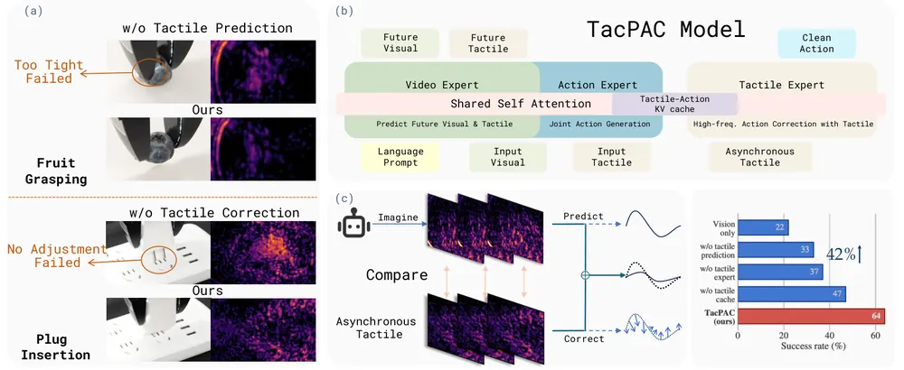
Same Trajectory, Contradictory Rewards (ROBORMBENCH): Paraphrase Fragility in Vision Language Reward Models
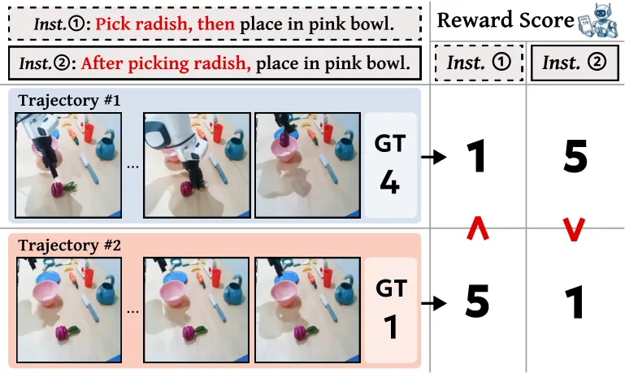
VLA-Precision: Asymmetric Co-Bootstrapping for Efficient Real-World Online RL of Vision-Language-Action Models
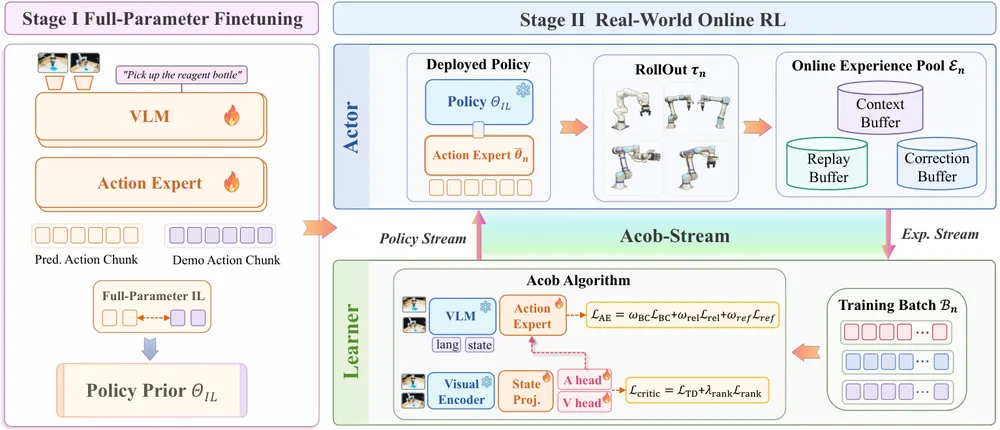
Linguistic Trajectory Encoding for Efficient Long-Horizon Spatial Memory in Embodied Agents
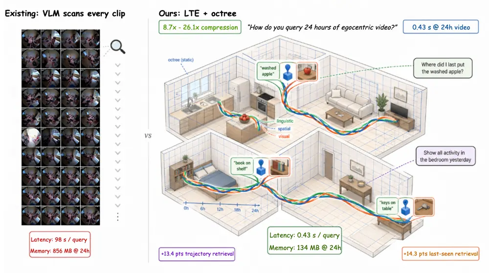
Reasoning Without Inference Cost: Latent Semantic Scaffolding for Robot VLA Policies
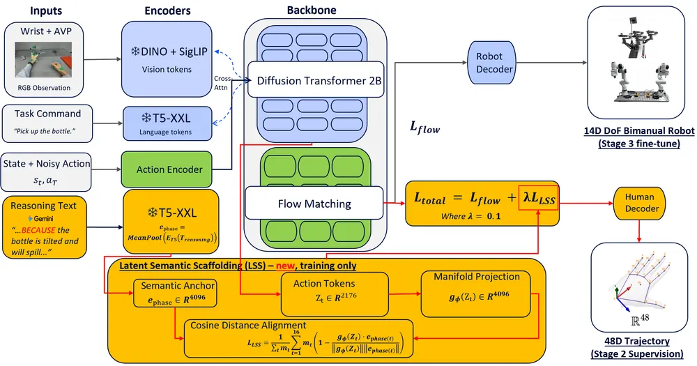
LIBERO-RECOVER: Beyond Task Success Towards Failure Recovery in Robotic Manipulation Models
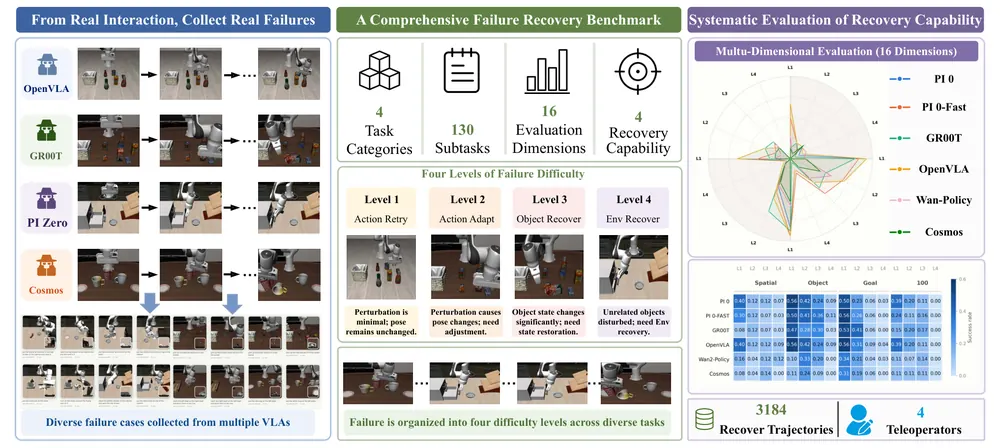
TourPhysics: Bringing Physics to World Models for Exploration and Manipulation from a Single Image
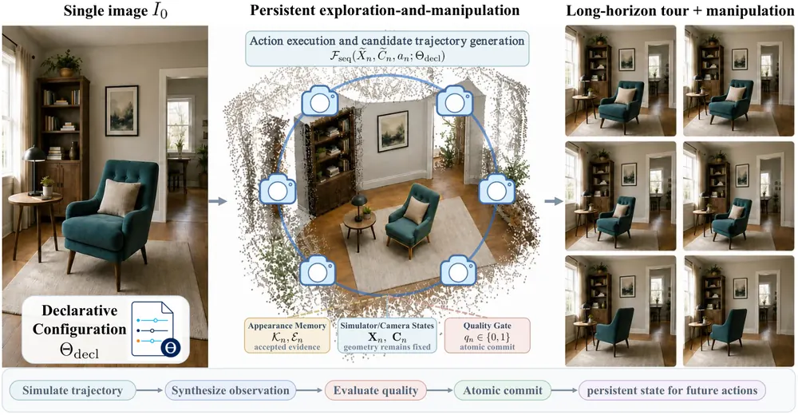
NavArena: Automated Construction of Goal-Oriented Navigation Benchmarks from 3D Gaussian Splatting Reconstructions
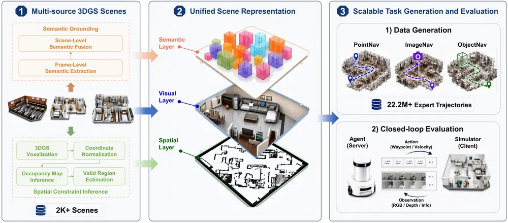
Continual Field-Adaptive Models (CFAMs) for Post-Deployment Physical AI
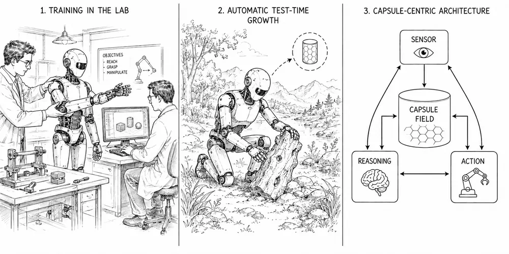
RoboSPA: Can VLA Models Go Beyond Simple Scenes and Short-Horizon Tasks?
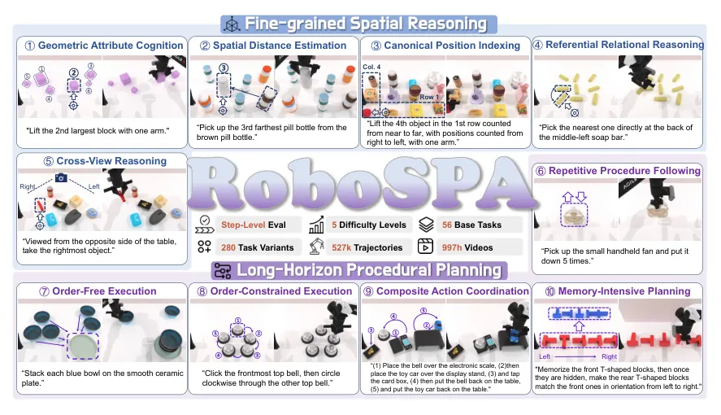
FailureSpot: Label-Efficient Timestamp-Level Failure Detection for Vision-Language-Action Models
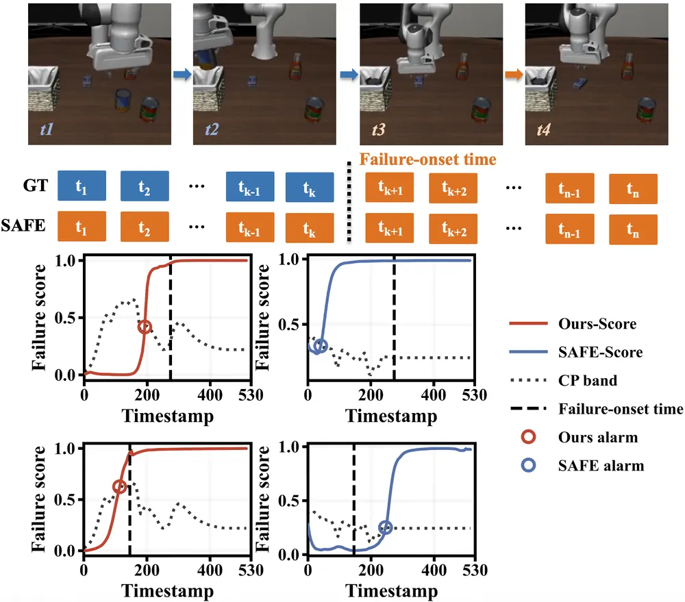
Temporal Tactile Encoding and Compliance for Intent-Aware Robot-to-Human Bimanual Handover
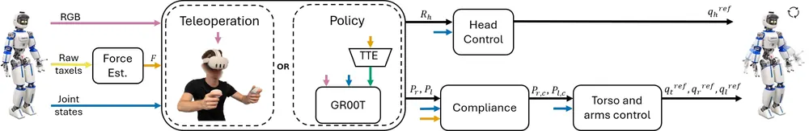
Dressing in Motion: A Human Motion-Aware Diffusion Policy for Robot-Assisted Dressing
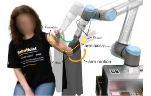
Object Concepts Emerge from Motion
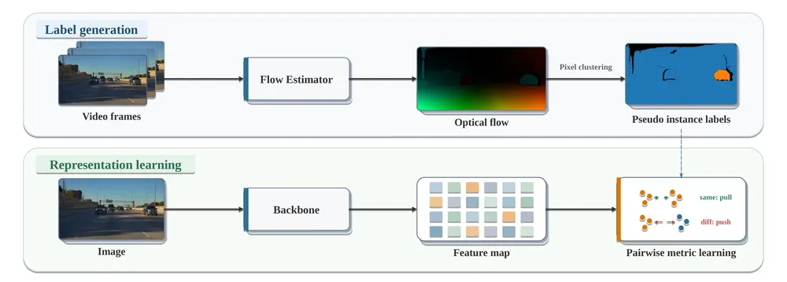
Spectral-Target Physical Latent Structuring for JEPA-Style World Models
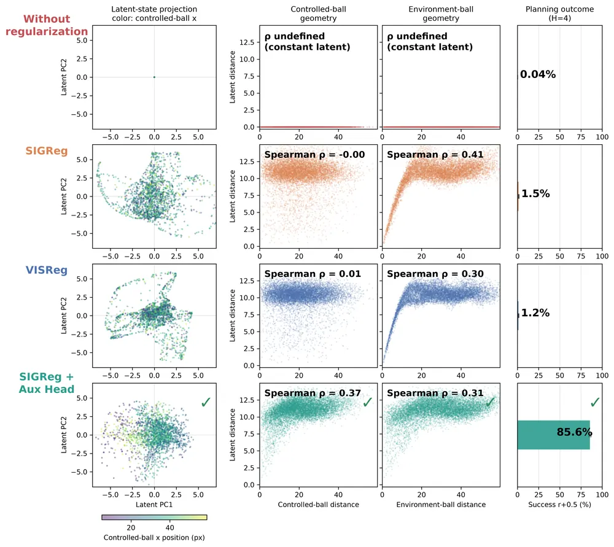
오늘의 핵심 연구 트렌드 종합
- 추론 비용 없는 학습 시점 보조 지도 — Latent Semantic Scaffolding과 Spectral-Target Physical Latent Structuring이 서로 다른 도메인(VLA policy, JEPA world model)에서 같은 패턴을 독립적으로 씀. 학습 때만 auxiliary head로 reasoning이나 물리 정보를 latent에 강제하고 추론 때는 head를 통째로 버려 비용 없이 이득만 남김.
- 실패를 측정 가능한 대상으로 만드는 벤치마크 러시 — LIBERO-RECOVER, RoboSPA, ROBORMBENCH가 모두 새 방법이 아니라 실패 유형을 세분화한 진단 도구임. 표준 벤치마크에서 90%대인 VLA가 실제 실패 상태·긴 절차·paraphrase 앞에서 50%p 이상 무너진다는 사실을 수치로 확정함.
- 예측을 캐시해두고 관측과 대조하는 실시간 보정 — TacPAC이 계획 시점의 예측 접촉을 KV 캐시로 남겨 실행 중 tactile 관측과 대조해 보정하고, Bimanual Handover도 tactile history로 release 시점을 직접 학습함. 두 논문 모두 "재계획 없이 진행 중인 chunk만 미세 수정"하는 동일한 설계를 씀.
- 로봇 메모리의 언어화 — Linguistic Trajectory Encoding과 CFAM이 각각 물체 이력과 스킬 이력을 압축된 형태로 저장해 장기 기억 문제에 접근함. 각각 언어 캡션+3D anchor(LTE)와 gradient-free capsule(CFAM, 파라미터 업데이트 없이 스킬 이력을 저장하는 단위)를 씀. 둘 다 개별 구성요소는 기존 기법 재조합이지만 memory representation의 problem framing 자체가 기여임.
- World model latent가 실제로 뭘 담고 있는지에 대한 의심 — Spectral-Target이 SIGReg(latent collapse 방지용 정규화 기법)로 collapse를 막아도 물체 위치 정보가 latent에 없는 physical representation laziness를 실증함. TourPhysics는 관찰(카메라 이동)과 개입(물리적 조작)을 명시적으로 분리해야 world model이 신뢰 가능하다고 주장함.
- VLM 기반 judge·reward의 신뢰성 위기 — ROBORMBENCH가 의미상 동일한 instruction의 표현만 바꿔도 VLM reward model이 같은 궤적에 정반대 판정을 내림을 보임. scale이나 reasoning을 늘려도 해결되지 않고, trajectory 기반 전용 reward model만 안정적이라는 결과는 VLA 평가·verification 전반에 걸린 문제로 볼 수 있음.
유망 연구 방향 및 프로젝트 제안
Cache-and-compare 방식의 범용 test-time 보정 모듈 - research question: TacPAC의 "예측을 캐시해두고 관측과 대조해 보정"하는 패턴을 tactile 외 force·시각 이상까지 통합하면, 재학습 없이 여러 contact-rich task에서 실시간 보정이 가능한가 - 접근·novelty: world-action model의 attention KV 캐시에 예측된 접촉·상태를 남기고, modality별 대조 신호를 하나의 delta-action expert로 통합하는 multi-modal correction head를 설계함 - 왜 지금·경쟁 prior works: TacPAC(tactile 전용, 단일 modality)과 FailureSpot(탐지만 하고 보정은 없음)은 각각 절반만 다룸 — 탐지와 보정을 하나의 캐시 기반 프레임으로 묶는 시도는 아직 없음 - risk·target venue: modality 간 신호 충돌 처리와 실로봇 검증 규모가 관건임. target venue는 CoRL/RSS
Object state recovery를 위한 counterfactual world model 결합 - research question: LIBERO-RECOVER와 RoboSPA가 공통으로 드러낸 object state recovery·memory-intensive planning의 0%대 성능을 world model 기반 counterfactual rollout으로 개선할 수 있는가 - 접근·novelty: "이 행동을 다르게 했다면 물체 상태가 어떻게 됐을까"를 world model로 시뮬레이션하고, CFAM의 correction/extension 구분 규칙으로 회복 전략을 선택하는 구조로 결합함 - 왜 지금·경쟁 prior works: 오늘 두 벤치마크가 동일한 gap을 독립적으로 수치화해 motivation이 이미 확보됨. 기존 recovery 연구는 대부분 LIBERO-Recover taxonomy의 Action Retry(단순 재시도) 단계에 머묾 - risk·target venue: world model의 예측 오차가 counterfactual 품질을 좌우하는 근본 제약임. LIBERO-RECOVER를 평가 도구로 CoRL에 제출
VLM judge/verifier의 paraphrase-invariance 진단과 완화 - research question: ROBORMBENCH가 reward model에서 보인 paraphrase fragility가 VLA의 subgoal verification·self-critique용 VLM judge에도 동일하게 나타나는가 - 접근·novelty: 우리 lab의 test-time verification 모듈에 ROBORMBENCH의 Score Crossing Rate(SCR, 동일 궤적이 성공·실패 판정을 동시에 받는 비율)·Flip Rate(FR, 판정 반전 비율) 지표를 이식해 진단하고, variance reduction training으로 안정성을 확보함 - 왜 지금·경쟁 prior works: reward robustness 논의는 reward hacking 중심이었고 언어 표면형 취약성은 이 논문이 처음 체계적으로 드러냄 — 아직 verifier 일반으로 확장한 연구는 없음 - risk·target venue: 우리 도메인에서 같은 취약성이 재현되지 않으면 기여가 약해짐. target venue는 NeurIPS D&B 트랙 또는 CoRL
언어화된 robot memory를 failure diagnosis에 연결 - research question: LTE(Linguistic Trajectory Encoding)의 물체별 언어 캡션+3D anchor 압축 표현을 조작 이력에 적용하면, 로봇이 장시간 실패 원인을 자연어로 회고하는 diagnosis 파이프라인을 만들 수 있는가 - 접근·novelty: LTE의 hybrid representation(캡션+공간 anchor+시각 anchor)을 물체 상태가 아니라 policy의 action-phase 이력에 적용해, "언제부터 무엇이 잘못됐는가"를 언어로 질의 가능하게 만듦 - 왜 지금·경쟁 prior works: LTE는 egocentric 물체 추적에 한정돼 있고 policy 실행 이력에는 적용된 바 없음. FailureSpot의 timestamp-level 탐지와 결합하면 탐지+설명을 한 파이프라인으로 묶을 수 있음 - risk·target venue: 언어 캡션 생성 비용과 실시간성 트레이드오프가 관건임. target venue는 CVPR/CoRL
오늘 반드시 읽어야 할 논문
- TacPAC — 예측 접촉을 캐시해 관측과 대조하는 실시간 보정으로 contact-rich task 성공률을 22%에서 64%로 끌어올림
- Same Trajectory, Contradictory Rewards (ROBORMBENCH) — VLM reward model이 표현만 바뀌어도 판정이 뒤집힌다는 근본적 신뢰성 문제를 처음 체계적으로 드러냄
- VLA-Precision — real-world online RL로 대형 VLA를 demonstration 한계 너머로 끌어올리며 throughput까지 10.9배 개선
- LIBERO-RECOVER — 실제 SOTA 모델의 자연 발생 실패를 그대로 수집한 첫 failure recovery 벤치마크, L3/L4에서 회복 성공률 사실상 0%
- Linguistic Trajectory Encoding — 물체 이력을 언어로 압축 저장해 장기 spatial memory 질의를 가능하게 함
- Reasoning Without Inference Cost — 추론 비용 없이 reasoning 이득만 남기는 alignment granularity의 발견(pooled는 역효과, dense는 전이됨)
- RoboSPA — memory-intensive planning에서 전 모델 0%를 기록해 robot memory 연구의 gap을 명확히 수치화
- Spectral-Target Physical Latent Structuring — world model이 collapse를 피해도 물리 정보를 담지 않는 새 실패 모드(physical representation laziness)를 정의
전체 1차 스크리닝 결과 (361편, 점수순) 펼치기
| # | 제목 | 점수 | 🤖 | 분야 | 한 줄 근거 |
|---|---|---|---|---|---|
| 1 | VLA-Precision: Asymmetric Co-Bootstrapping for Efficient Real-World Online RL of Vision-Language-Action Models | 76 | 10 | VLA | asymmetric co-bootstrapping으로 실제 로봇 online RL의 value drift와 처리량 병목을 동시에 해결했고 4개 embodiment·9개 정밀 작업에서 98.3% 성공률을 보여 VLA RL 우선 주제에 직접 부합함 |
| 2 | FailureSpot: Label-Efficient Timestamp-Level Failure Detection for Vision-Language-Action Models | 72 | 10 | VLA | VLA action chunk의 이상 패턴으로 weak label을 생성하고 active learning으로 timestamp 단위 실패 탐지 정밀도를 높인 label-efficient 방법이며 failure detection 우선 주제에 직접 부합함 |
| 3 | Continual Field-Adaptive Models (CFAMs) for Post-Deployment Physical AI | 70 | 9 | VLA | gradient-free one-shot on-device 업데이트로 배포 후 지속학습하는 CFAM을 pi0·CogACT·SpatialVLA와 5개 embodiment에서 비교해 40% 데이터로 동등 성능과 낮은 backward transfer 손실을 보인 continual learning 연구임 |
| 4 | LIBERO-RECOVER: Beyond Task Success Towards Failure Recovery in Robotic Manipulation Models | 68 | 10 | Manipulation | LIBERO 기반으로 SOTA embodied 모델의 실제 실패 사례를 수집해 4단계 회복 수준·1000개 이상 시나리오로 구성한 failure recovery 벤치마크로 failure detection·recovery 우선 주제에 직접 부합함 |
| 5 | TacPAC: Tactile Prediction and Real-Time Action Correction in World-Action Models for Contact-Rich Manipulation | 68 | 9 | Manipulation | world-action model의 예측된 접촉 정보를 캐시해두고 새 tactile 관측이 들어올 때마다 action chunk를 재생성 없이 실시간 보정하는 방법으로 5개 실제 로봇 접촉 작업에서 성공률을 22%에서 64%로 크게 높임 |
| 6 | Linguistic Trajectory Encoding for Efficient Long-Horizon Spatial Memory in Embodied Agents | 68 | 8 | Embodied AI | 동적 물체의 상태 변화를 자연어·좌표·시각 anchor로 압축해 며칠 단위 시간 지평에서도 언어로 질의 가능하게 만든 robot memory 표현으로 기존 최고 baseline 대비 semantic trajectory retrieval을 31.9%에서 45.3%로 끌어올림 |
| 7 | Object Concepts Emerge from Motion | 66 | 5 | Representation Learning | optical flow로 얻은 motion boundary만으로 421M 프레임 규모 object-centric 표현을 학습해 depth·3D detection·end-to-end planning에서 supervised baseline과 경쟁하는 결과를 보여 확장 가능한 self-supervised 표현학습으로 임팩트가 있음 |
| 8 | TourPhysics: Bringing Physics to World Models for Exploration and Manipulation from a Single Image | 63 | 7 | World Model | 단일 이미지에서 결정론적 시뮬레이터 상태와 비디오 생성기를 분리해 장기간 탐색·조작을 유지하는 world model로 관찰과 개입을 명시적으로 구분한 novel formulation이 test-time planning·world model 우선주제와 직접 맞닿음 |
| 9 | Reasoning Without Inference Cost: Latent Semantic Scaffolding for Robot VLA Policies | 62 | 9 | VLA | 학습 중에만 action token을 물리적 reasoning rationale에 정렬시키고 추론 시 해당 head를 제거해 zero 추가 비용으로 causal reasoning 이점을 얻는 방법이며 phase 단위 정렬이 pooled 정렬보다 전이 성능이 크게 높다는 것을 보임 |
| 10 | RoboSPA: Can VLA Models Go Beyond Simple Scenes and Short-Horizon Tasks? | 60 | 9 | VLA | 공간 추론과 장기 절차 계획 두 축에서 난이도를 5단계로 나눈 56개 base task·527K trajectory 규모의 VLA 진단 벤치마크로 현재 VLA가 복잡한 공간 관계와 메모리 집약적 계획에서 취약함을 보임 |
| 11 | Spectral-Target Physical Latent Structuring for JEPA-Style World Models | 60 | 7 | World Model | JEPA 스타일 world model에서 latent가 붕괴하지 않고도 물리량을 반영하지 못하는 새로운 실패 모드(physical representation laziness)를 정의하고 Fourier auxiliary head로 계획 성공률을 개선해 world model·test-time planning 우선주제와 직접 맞닿음 |
| 12 | Dressing in Motion: A Human Motion-Aware Diffusion Policy for Robot-Assisted Dressing | 58 | 8 | Manipulation | 정적 시연으로 학습해 동적 사용자 팔 움직임에 일반화하는 garment-human contact geometry 기반 diffusion policy로 9명 참가자 실사용자 연구까지 수행한 dressing assistance 연구임 |
| 13 | Temporal Tactile Encoding and Compliance for Intent-Aware Robot-to-Human Bimanual Handover | 58 | 8 | Manipulation | VLA에 temporal tactile encoding과 compliance controller를 결합해 로봇-인간 양수 handover의 의도 추론과 안전성을 높인 연구로 실사용자 연구까지 수행함 |
| 14 | Same Trajectory, Contradictory Rewards (ROBORMBENCH): Paraphrase Fragility in Vision Language Reward Models | 58 | 8 | RL | 동일 궤적이 지시문 paraphrase만으로 성공·실패가 뒤바뀌는 VLM 보상모델의 불안정성을 2390개 실로봇 궤적·21673개 검증된 paraphrase로 정량화한 벤치마크로 VLM-as-reward 신뢰성 문제를 제기함 |
| 15 | NavArena: Automated Construction of Goal-Oriented Navigation Benchmarks from 3D Gaussian Splatting Reconstructions | 58 | 7 | Navigation | 고정된 3DGS 재구성을 traversability·의미적 목표가 있는 navigation 벤치마크로 자동 변환하는 프레임워크로 3D representation·navigation 우선 주제에 부합함 |
| 16 | Compact Bellman-Grounded Cognitive Maps for Cost-Aware Navigation | 58 | 7 | Navigation | local edge cost를 self-supervised Bellman objective로 압축 인코딩해 재사용 가능한 cognitive map을 만든 방법으로 navigation·robot memory 우선주제에 직접 부합하고 3600 노드까지 sublinear 메모리 확장을 보였으나 grid 환경 검증에 그침. |
| 17 | Fractal basins trap latent reasoning | 58 | 2 | LG | reasoning model의 test-time 연산 지연을 transient chaos·fractal basin으로 설명한 동역학계 분석으로 새로운 관점을 제시하나 robotics 적용은 없고 test-time reasoning 일반론에 그침 |
| 18 | Where Appearance Fails, Geometry Recognizes: A CAD-Free 3D Shape Prior That Complements Vision Foundation Models | 56 | 7 | 3D Vision | CAD 없이 3DGS로 얻은 형상 prior가 DINOv2 이미지 특징을 언제 보완하는지 정량 분석한 로보틱스 인식 논문으로 실용적 통찰은 있으나 새 학습 방법론은 아니고 BOP pose까지는 다루지 않음 |
| 19 | WorldSculpt: Generating Compositional Worlds from Grounded Videos | 56 | 6 | 3D Vision | 단일 물체용 3D 생성 prior를 multi-view 조건으로 확장해 수백 개 물체가 심하게 가려진 장면을 물체별 메쉬로 compositional 복원하는 방법으로 시뮬레이션·로보틱스 활용 가능성이 있고 장면 복잡도가 커질수록 이득이 커짐 |
| 20 | One Word, Different Action: A Real-Robot Benchmark for Language-Conditioned Embodied Reasoning | 55 | 8 | VLA | 실제 로봇에서 task-preserving·task-changing 지시어 쌍으로 decision invariance와 sensitivity를 함께 측정하는 벤치마크이며 다중 제약 통합이 현재 모델의 남은 난제임을 보임 |
| 21 | CLON: Cue-Calibrated Linguistic Object Onboarding for Zero-Shot 6D Pose Front-Ends | 55 | 7 | Manipulation | 6D pose 프론트엔드에서 텍스트 기반 semantic memory로 새 물체를 학습 없이 온보딩하는 방법으로 BOP 7개 데이터셋에서 detection·pose AR을 일관되게 올려 조작 인식에 실용적 기여가 있음 |
| 22 | BLASt3R: Bundle Adjustment of Any Image Set with Multi-View Matching and Monocular Priors | 55 | 7 | 3D Vision | 빠른 multi-view matcher와 monocular prior로 초기화·정규화하는 bundle adjustment를 제안해 온라인 VSLAM과 오프라인 SfM을 하나의 프레임워크로 통합한 실용적 기여이며 uncalibrated 설정에서 기존 calibrated 방법을 능가함 |
| 23 | Achieving Asymptotic Near-Optimality Without $δ$-Similarity | 55 | 7 | Manipulation | 샘플링 기반 motion planner의 asymptotic near-optimality 증명에 숨은 delta-similarity 가정의 허점(crowding out)을 지적하고 이를 우회하는 대안 증명을 제시한 이론 연구임 |
| 24 | Open-Set 3D Scene Graphs for Field Robotics: An Outdoor Case Study | 55 | 7 | 3D Vision | 야외 5개 실제 데이터셋에서 open-set 3D scene graph의 semantic embedding·traversability·일관성 한계를 실증 분석한 field robotics 연구로 scene graph 우선 주제에 부합함 |
| 25 | Coupled Control and Wireless World Models for Resilient Remote Robotic Control | 55 | 7 | World Model | JEPA 기반 world model이 로봇 동역학과 무선 채널 상태를 동시에 latent로 예측해 불필요한 업링크 전송을 줄이는 원격 로봇 제어 프레임워크로 world model 우선 주제와 통신 문제를 결합한 참신한 시도임 |
| 26 | Where to Look Matters: Learning Influential Views for VLM-based 3D Visual Grounding | 55 | 6 | Embodied AI | 3D visual grounding에서 VLM에 줄 카메라 뷰를 휴리스틱 대신 학습으로 선택하게 한 방법으로 embodied spatial reasoning과 직접 관련되고 ScanRefer/NR3D에서 일관된 개선을 보임 |
| 27 | AquaBEV: Monocular Underwater BEV Occupancy with 3D Sonar Supervision | 55 | 6 | 3D Vision | 단안 수중 영상에서 3D sonar를 지도로 BEV occupancy를 예측하는 연구로 active perception·3D representation 우선 주제와 닿아 있으나 도메인이 수중으로 제한적임 |
| 28 | FailSAE: Towards Interpretable Failure Prediction for Vision-Language Models via Sparse Autoencoders | 55 | 4 | Multimodal | VLM failure를 SAE latent로 해석 가능하게 예측하는 시도로 failure detection 주제와 맞닿아 있으나 VLM 분류 실패에 국한되고 로봇 실패로의 확장은 탐색 수준임 |
| 29 | DCFA: Dual-view Causal-inspired Attribution for Failure Reasoning in LLM-based Multi-agent Systems | 55 | 4 | AI | LLM multi-agent 시스템의 결정적 실패 원인을 causal dependency graph와 local counterfactual 추론으로 특정하는 training-free 프레임워크임. Who&When 벤치마크에서 최대 8.27%p 개선했고 failure attribution과 counterfactual reasoning 결합 방식은 로봇 failure diagnosis에 직접 적용 가능한 아이디어임. |
| 30 | What Moves? Localized Motion Representations for Compositional Scene Control | 55 | 3 | Video | 전역 문맥을 유지하면서 마스크로 지정한 영역의 motion만 인코딩하는 promptable 표현을 제안해 compositional scene control에서 개선을 보이나 로봇 조작으로의 적용은 제시되지 않음 |
| 31 | When Do Internal Probes Beat Reading the Answer? Miscalibrated Readouts and Behavior-Concealed Knowledge in Language Models | 55 | 0 | NLP | behavior로는 구분 못 하는 지식이 hidden state에는 0.96 AUC로 살아있음을 밝히고 원인을 saturated decision threshold 하나로 특정한 mechanistic 연구임. threshold 보정만으로 정확도를 50%에서 81%로 복구해 실용적 시사점이 큼. |
| 32 | Human-Human & Human-Robot Interaction Transformer (H2INT) for Robot Navigation in Dense and Uncertain Crowds | 54 | 7 | Navigation | 사람-사람·사람-로봇 상호작용을 계층적 gated transformer로 인코딩하고 curriculum으로 responsiveness를 낮춰 학습한 crowd navigation RL이며 실제 로봇 배치까지 검증함 |
| 33 | One Diffusion Model, Two Roles: Guided Trajectory Planning and Safety-Critical Scenario Generation in Closed-Loop Simulation | 54 | 6 | RL | 하나의 diffusion traffic model을 ego planner와 안전-critical 시나리오 생성기로 동시에 쓰는 아이디어로 planner 성능과 강건성이 별개임을 보였으나 자율주행 특화 벤치마크(nuPlan)에 한정됨 |
| 34 | UniMate: One Unified Model to Animate Diverse Skeletons | 54 | 3 | Generative | 임의의 골격 구조에 텍스트로 모션을 생성하는 topology-aware diffusion transformer로 그래프 라플라시안 기반 위치 임베딩 등 구조적 novelty가 있으나 로봇 자체가 아닌 캐릭터 애니메이션 대상임 |
| 35 | Morphology and actuation as inductive biases in robotic hand manipulation | 52 | 7 | Manipulation | task Jacobian과 actuation matrix의 conditioning으로 로봇 손의 형태·구동 설계가 제어 난이도에 미치는 영향을 분석하고 PPO·DDPG+HER·TQC+HER로 검증한 dexterous manipulation 연구임 |
| 36 | Iris: Climbing to the Search Frontier | 52 | 1 | RL | hyperlink 구조에서 역구성한 multi-hop 질의로 SFT-RL climbing 절차를 반복 학습한 35B/397B search agent임. BrowseComp 등에서 오픈소스 최고 성능을 달성했고 학습 레시피 전체를 공개할 계획이라 재현성이 높음. |
| 37 | ARC-Loc: Leveraging Azimuthal Ray Convergence as a Geometric Cue for Direct Cross-View Localization | 51 | 6 | Navigation | 지상 키포인트를 위성 지도 위 azimuthal ray로 변환해 depth 모델 없이 cross-view localization을 푸는 기하학적 해법으로 로컬라이제이션에 실용적인 새 아이디어임 |
| 38 | CrossDepth: Geometry-Constrained Attention for Generalizable Multi-View Surround Depth Estimation | 50 | 6 | 3D Vision | surround 카메라 간 겹침이 적어 생기는 depth 불일치를 카메라 인식 ray embedding과 기하 제약 cross-attention으로 완화한 self-supervised 방법으로 자율주행 인식에 실용적임 |
| 39 | HiSfM: Disambiguating Structure-from-Motion via Scaffold-Anchored Hierarchical Reconstruction | 50 | 5 | 3D Vision | 반복·대칭 구조에서 SfM이 실패하는 문제를 scaffold 기반 계층 구조로 해결한 방법으로 매핑·로컬라이제이션에 실용적이나 SfM 파이프라인 개선 수준의 기여임 |
| 40 | Sound-based Multi-Person 3D Pose Estimation | 50 | 4 | CV | 음향 신호만으로 다인 3D pose를 최초로 추정한 시도로 새로운 센싱 modality를 여는 문제 설정이지만 지금은 통제된 환경의 6시간 데이터셋에 국한됨 |
| 41 | SiLR: Structure-Preserving Admission and Process Reward for LLM Tool Agents | 50 | 3 | AI | 위반 상태에서의 진행 허용을 scalar aggregate가 아닌 branch별 violation의 product order로 판단해야 함을 증명한 admission 프레임워크임. no scalar surrogate가 sound하지 않다는 수학적 증명과 Gym-ANM 21/21 복구 성공은 로봇의 안전한 failure recovery 게이팅 설계에 직접 참고할 만함. |
| 42 | Unifying ICL, SFT, KL-Regularized RL Through a Bayesian Lens | 50 | 2 | RL | ICL·SFT·KL-regularized RL을 Bayes posterior projection이라는 단일 틀로 통합한 이론 노트로 일반화 가능한 도구적 가치가 크나 실증 검증이 없는 이론 전용 논문임. |
| 43 | Evidence Integration in Large Language Models | 50 | 1 | NLP | LLM이 외부 증거를 기존 답변 분포에 어떻게 통합하는지 1000만 회 실험으로 분석한 대규모 연구로 언어 피드백 기반 학습과 개념적으로만 닿아 있고 robotics 적용은 없음 |
| 44 | What Attention Recalls and Recurrence Controls in Hybrid Language Models | 50 | 0 | NLP | Qwen3.5·Falcon-H1에서 KV cache와 recurrent state의 역할을 cache-level intervention으로 분리한 mechanistic 연구임. attention은 정확한 검색, recurrence는 언어·persona를 담당한다는 causal 증거를 state-swap으로 제시함. |
| 45 | Towards Neuro-Symbolic Procedural Reasoning for Long-Horizon Vision-Language-Action Manipulation | 48 | 8 | VLA | VLA에 명시적 task graph와 절차적 메모리, 시선 기반 안내를 결합해 장기 작업 상태 추적을 시도한 neuro-symbolic 접근이나 6쪽 워크숍 non-archival 초록 수준의 예비 연구임 |
| 46 | MINT: A Unified Model for World-Space Camera and Hand Motion Estimation from Scalable Egocentric Pipeline Supervision | 48 | 6 | Robot Learning | egocentric 영상에서 카메라와 양손의 world-space trajectory를 하나의 foundation model로 통합 추정해 imitation learning용 시연 데이터 확보에 유용하지만 논문 본문의 핵심 수치가 [xxx]로 비어 있어 개선폭을 확인할 수 없음 |
| 47 | VoxelFix: Post-Hoc Semantic Correction of Completed 3D Voxel Maps | 48 | 6 | 3D Vision | 이미 완성된 3D voxel map의 기하는 고정한 채 그래프 기반 모델로 semantic label만 사후 보정하는 방법으로 항공 로보틱스 semantic mapping에 실용적이고 out-of-distribution 장면 전이도 확인함 |
| 48 | FIRE-LIVWO: Robust LiDAR-Inertial-Visual-Wheel Odometry via Failure-Immune mmWave Radar Enhancement | 48 | 6 | Navigation | 지하 광산처럼 시각·라이다가 저하되는 환경에서 mmWave radar Doppler 제약과 wheel odometry를 IESKF로 결합하고 관측 가능성 기반으로 모달리티를 전환하는 SLAM 연구임 |
| 49 | Step Back to Move Forward: Reflection-Aware Preference Optimization for Visual Generation | 48 | 2 | Generative | diffusion RL 정렬에 backward reflection을 도입한 아이디어는 참신하나 T2I/T2V reward hacking 완화라는 생성모델 내부 문제이고 robotics와의 연결은 없음 |
| 50 | La Agente Óptima: Towards Agentic Self-Driving Laboratories | 48 | 2 | AI | LLM reasoning과 실행되는 Bayesian optimization 캠페인을 분리해 지속적으로 감독하는 self-driving lab 에이전트 프레임워크임. 실제 flow-chemistry 실험에서 수율을 30%에서 59%로 올리고 중간 측정 실패를 스스로 감지·수정해 물리 실험 검증까지 갖춤. |
| 51 | WeAgent-MMGenEdit: A Full-Stack Recipe for Multimodal Agentic Image Generation and Editing | 48 | 1 | Multimodal | 외부 지식이 필요한 이미지 생성·편집을 검색·검증 도구를 갖춘 에이전트로 해결하는 full-stack 레시피로 규모는 크지만 로봇 문제와는 직접 연결되지 않음 |
| 52 | Extremely Sparse Supervision Incentivizes Reasoning Ability | 48 | 1 | RL | on-policy distillation에서 trajectory당 토큰 1-2개(전체의 0.05%)만으로 reasoning 능력을 유도할 수 있음을 아홉 개 teacher-student 조합에서 보인 반직관적 발견임. 토큰 집약적이어야 한다는 기존 가정을 정면으로 반박함. |
| 53 | Hakken: Predicting future discoveries to fill the gaps in today's knowledge | 48 | 0 | AI | 지식그래프 기반 신규 관계 예측 시스템으로 wet-lab 검증까지 갔다는 점은 흥미로우나 robotics와 무관함 |
| 54 | Shared circuits predict whether LLMs generalize across formats in arithmetic reasoning | 48 | 0 | NLP | 숫자·언어 서술 산술 문제 간 generalization을 circuit overlap으로 예측한 attribution patching 연구임. 라벨 없이 supervised probe와 견줄 예측력을 보인 점이 흥미로움. |
| 55 | LetOccVote: Learning Weakly Supervised 3D Occupancy through Consensus | 47 | 5 | 3D Vision | cross-frame 합의로 2D pseudo-label의 신뢰도를 판별해 3D occupancy를 약지도 학습하는 방법으로 Occ3D-nuScenes에서 SOTA를 달성했지만 pseudo-label 필터링 아이디어에 가까움 |
| 56 | Cross-Domain Tracker Adaptation Without Target-Domain Labels via Vision-Language Agents | 47 | 4 | CV | 타깃 도메인 라벨 없이 VLM이 tracking 결과를 시각적으로 진단해 하이퍼파라미터를 조정하는 방법으로 label-free 도메인 적응에 새로운 접근이지만 검증된 실패 조건이 제한적임 |
| 57 | LookThere! Sparse Vision by Reinforced Selection | 47 | 3 | CV | 어디를 볼지(selector)와 무엇을 볼지(extractor)를 end-to-end RL로 함께 학습해 0.2% 토큰만으로 정확도를 유지하는 결과는 active perception과 맞닿아 있지만 목적이 추론 효율화임 |
| 58 | What Matters, When? Diagnosing and Improving Conditional Visual Grounding in Visuomotor Imitation Policies | 46 | 7 | Manipulation | ACT 정책이 조작 단계별로 다른 시각적 대상에 조건화된다는 conditional visual grounding 문제를 진단하고 distractor augmentation 등으로 실제 UR3e에서 강건성을 개선했으나 4쪽 워크숍 초록임 |
| 59 | Weather-Conditioned Depth Anything | 46 | 5 | 3D Vision | Depth Anything에 날씨 스타일을 분리하는 경량 adapter를 붙여 악천후에서도 depth 정확도를 유지한 방법으로 자율주행·내비게이션에 실용적이나 adapter 삽입 수준의 기여임 |
| 60 | ICM-Bench: Person-Level Identity Reasoning in Multimodal Agents with Long-Term Memory | 46 | 3 | Multimodal | 장기 영상에서 인물 정체성을 유지하며 추론하는 벤치마크로 robot memory와 맞닿아 있으나 embodied agent가 아닌 caption/QA 세팅이고 새 방법 제안은 없음 |
| 61 | Compact Neural Appearance Models for Efficient Gaussian Splatting | 46 | 3 | 3D Vision | 3DGS의 spherical harmonics를 대체하는 압축된 neural appearance 모델을 동일 파이프라인에서 철저히 비교해 primitive당 저장량을 192바이트에서 28바이트로 줄인 실용적 분석 논문임 |
| 62 | CoSkill: Joint Reinforcement Learning of Reasoning and Meta-Skill Agents for Hierarchical Skill Evolution | 46 | 3 | RL | reasoning agent와 meta-skill agent를 공동 RL로 co-adapt시키는 구조라 skill chaining 관점에서 참고할 만하나 ALFWorld/WebShop 텍스트 환경에 국한됨. |
| 63 | How to Speculate about Uncertainty in Agentic Coding? A Draft-Model Gate Method | 46 | 2 | LG | draft model로 black-box coding agent의 실패 가능성을 사전 점수화하는 방법으로 failure detection 아이디어가 소프트웨어 에이전트에 국한되나 VLA 실패 탐지에 참고할 만함 |
| 64 | Beneath the Surface of Chains-of-Thought: A Mechanistic Interpretation of Reasoning Operations in LLMs | 46 | 1 | NLP | CoT 내 reasoning operation들이 hidden representation에서 기하학적으로 분리됨을 보인 mechanistic 연구임. middle layer에서 separability가 최고라는 발견은 test-time reasoning 분석 일반에 참고할 만함. |
| 65 | RISE: Recursive Improvement via Self-Extrapolating Policy Distillation | 46 | 1 | RL | RLVR 궤적의 checkpoint 변위를 외삽해 합성 teacher를 만드는 self-distillation 루프로 외부 teacher 없이 dense token supervision을 제공하나 로봇이 아닌 LLM reasoning 학습에 한정됨. |
| 66 | Towards Understanding Pause Token Fine-Tuning Dynamics: A Mode Retention Perspective | 46 | 0 | NLP | pause token을 추론 능력이 아니라 training dynamics의 retention-adaptation trade-off로 재해석한 연구임. Masked Boundary Pause로 1B-8B 모델에서 수학 최대 6점 개선을 보였고 GRPO까지 확장함. |
| 67 | SocioGesture: Real-Time and Adaptive Social Gesture Perception for Human-Robot Interaction | 45 | 6 | Embodied AI | occlusion-aware skeleton corruption으로 학습한 경량 dual-stream 모델로 실시간 사회적 제스처를 인식하는 HRI 시스템 연구임 |
| 68 | Efficient Multi-Timescale Event Representations for Feed-Forward Object Detection | 45 | 5 | CV | event camera의 시간 정보를 recurrent 구조 없이 log B-spline 인코딩으로 직접 담아 feed-forward object detection을 개선한 방법으로 저지연 인식에 실용적임 |
| 69 | Reflection-aware Generative Novel View Synthesis | 45 | 2 | 3D Vision | 거울이 있는 장면에서 반사를 두 개의 보완적 뷰로 취급해 학습 없이 novel view synthesis를 개선한 방법으로 아이디어는 명확하지만 적용 범위가 거울 장면에 국한됨 |
| 70 | Harbor Adapters and Harbor-Index: Infrastructure and a Curated Meta-Dataset for Large-Scale Agentic Evaluation | 45 | 1 | AI | 80개 이상 agentic 벤치마크를 통합한 평가 인프라와 82개 고난도 과제로 정제한 Harbor-Index를 제안함. 대규모 실증(8개 모델x54벤치마크)으로 agent 평가 방법론에 실질적 인프라 기여를 함. |
| 71 | Why Better Models Can Create Riskier Systems: Evidence from LLM Agents in Financial Markets | 45 | 1 | AI | LLM 능력이 높아질수록 행동이 상관되어 시스템 수준 리스크가 커진다는 capability paradox를 금융 다중 에이전트 시뮬레이션으로 검증한 연구임. 공유 학습·아키텍처로 인한 correlated failure는 multi-robot 시스템의 공통 실패 모드 설계에도 시사점을 줌. |
| 72 | What Does Multi-Harness RL Learn? Credit Assignment and Portability in Coding Agents | 45 | 1 | RL | coding agent RL에서 grouping 규칙(cross- vs within-harness)이 held-out harness 성능을 거의 바꾸지 않고 대신 평가 harness 자체가 지배적 변수임을 24,000회 평가로 입증한 엄밀한 negative-result 연구임. credit assignment의 일반화 가능성에 대한 중요한 방법론적 경고임. |
| 73 | Harness-agnostic detection and immunization of reward hacking in self-evolving language models | 45 | 1 | AI | self-evolving LM의 reward hacking을 블랙박스 hook만으로 탐지·면역시키는 harness-agnostic 모니터임. detectability bound를 이론적으로 유도하고 clean run 손실보다 큰 capability 회복을 보여 self-improvement 안전성 설계에 참고할 만함. |
| 74 | The Anatomy of an ASR Hallucination | 45 | 0 | NLP | ASR hallucination을 grounding failure로 규명한 mechanistic 연구임. Conformer 두 종류에서 최종 encoder 단계가 핵심 경계임을 보였으나 hallucination의 완전한 원인은 아니라고 스스로 인정함. |
| 75 | Recurrence Is Not Enough: Causally Validating Multilingual SAE Translation Features in Gemma 2 and 3 | 45 | 0 | NLP | SAE feature의 cross-lingual 재현성이 causal 효과와 무관할 수 있음을 Gemma 2·3에서 검증한 연구임. 대부분의 재현 feature는 효과가 미미하고 단 하나만 23개 언어 설정에서 일관됨을 밝혀 기존 해석가능성 주장에 경종을 울림. |
| 76 | A Systematic Comparison of Multilingual Interpretability Methods Reveals Anisotropy-Driven Failures | 45 | 0 | NLP | 4개 cross-lingual sharing metric이 서로 불일치하는 원인을 anisotropy로 규명하고 ILO를 권장한 체계적 비교 연구임. 21개 모델에 걸친 검증으로 해석가능성 측정 방법론에 실질적 기여를 함. |
| 77 | SimFuse3D: Source-Guided Target Simulation and Confidence-Guided Multi-Stage Localization Reweighting for Cross-Platform 3D Object Detection | 44 | 5 | 3D Vision | 센서 높이·시점이 다른 LiDAR 간 UDA에서 소스 물체를 타깃 관측 기하로 재현해 pseudo-object를 보정하는 방법으로 자율주행 3D detection에 실용적이나 도메인 적응 파이프라인 조합 수준임 |
| 78 | Trace2Tower: Transition-Aware EigenTrace Induction of Multi-Level Skills for LLM Agents | 44 | 3 | RL | 실행 trace를 성공-정렬된 안정 모드로 spectral decomposition해 계층적 skill tower를 만든 방법으로 ALFWorld·WebShop에서 성능이 강하나 텍스트 embodied 환경에 국한됨. |
| 79 | Think-Verify-Revise: Neuro-Symbolic Visual Reasoning with Vision-Language Models and Dynamic Logic Tensor Networks | 44 | 2 | Multimodal | VLM이 FOL 규칙을 제안하고 Dynamic Logic Tensor Network가 검증·피드백하는 neuro-symbolic closed loop로 아이디어는 새롭지만 검증이 MNIST 변형 Sudoku 벤치마크에 국한됨 |
| 80 | Conformity Breaks Conformal Prediction | 44 | 2 | LG | 동료 에이전트가 만장일치로 오답을 내면 conformal prediction의 커버리지가 90%에서 74%로 무너진다는 것을 보인 분석으로 multi-agent LLM 시스템의 불확실성 정량화 신뢰성에 경고를 주는 결과임 |
| 81 | On Epistemic Diversity in Large Language Models | 44 | 0 | NLP | 정답 정확도만으로 평가되지 않는 epistemic diversity라는 새 평가 축을 개념화하고 두 도메인에서 정량화한 연구임. frontier LLM들이 답변 공간을 좁게 수렴시킨다는 발견이 평가 패러다임에 실질적 제안을 던짐. |
| 82 | Strict Modes Everywhere - Bringing Order Into Dynamics of Mechanical Systems by a Potential Compatible With the Geodesic Flow | 42 | 5 | Manipulation | geodesic flow와 호환되는 potential을 설계해 2자유도 매니퓰레이터의 주기궤도를 탄성요소로 효율적으로 실행하는 제어 이론 연구임 |
| 83 | Mitigating Performance Discrepancy in Cross-Domain 3D Class-Incremental Learning | 42 | 4 | 3D Vision | 이질적 도메인(CAD·RGB-D·비디오)의 3D class-incremental learning에서 도메인별 성능 격차라는 새로운 현상을 정의하고 이를 완화하는 exemplar-free 방법을 제안함 |
| 84 | HaptiNet: Networked Haptic Robots Enable Physical Co-presence in Geographically-Unconstrained Rehabilitation | 42 | 4 | Manipulation | imitation learning 기반 지연 보상기로 원격지 재활 환자 간 haptic co-presence를 구현한 대규모 임상 검증 연구로 로봇학습 우선 주제와는 거리가 있는 응용 시스템임 |
| 85 | When Seeing Overrides Knowing: Visual Dominance and Deferral-Based Method for Personalized Safety in VLMs | 42 | 2 | Multimodal | VLM의 시각 우세 편향이 개인화 안전을 해친다는 메커니즘 분석은 흥미롭지만 벤치마크·경량 모니터 제안 위주라 로봇 문제로의 직접 연결은 약함 |
| 86 | From Vision to Language: Investigating Causal Information Flow in Multimodal Decision-Making | 42 | 2 | Multimodal | video-text attention에 layer-wise causal intervention을 적용해 VLM의 시각 정보가 답변 옵션 처리 시점에 통합됨을 밝힌 연구임. VLM이 프레임 간 시간 순서 재구성에 취약하다는 발견은 embodied spatial·temporal reasoning에 시사점을 줌. |
| 87 | TROVE: Adaptive Agent Skill Orchestration via Trace-Grounded Route Validation and Editing | 42 | 2 | LG | 실행 중 evidence로 무효화된 부분만 국소 수정하는 route validation·editing 원리는 long-horizon planning에 일반화 가능하나 code/QA/math 도메인에서만 검증됨. |
| 88 | Does Your Agent's Memory Survive a Model Upgrade? A Controlled Study of Memory Portability | 42 | 2 | LG | 모델 업그레이드 시 agent 메모리 형식별(RAW/RAG/NOTES/KG) 이식성을 통제 실험으로 비교해 고정 스키마 KG가 가장 안정적임을 보였고 robot memory 설계에 참고할 실증적 시사점이 있으나 텍스트 agent 한정임. |
| 89 | Counting Beyond Instances: A Benchmark for Group-Individual Object Counting | 42 | 1 | CV | 개체 단위와 그룹 단위 카운팅을 동시에 요구하는 새 태스크(GIC)와 벤치마크를 제안해 문제 설정 자체는 새롭지만 로봇 문제로의 연결은 없음 |
| 90 | Learning 3D Editing without Paired Supervision via Generative Prior Distillation | 42 | 1 | 3D Vision | 쌍 데이터 없이 2D 이미지 편집·VLM·3D teacher를 distill해 feed-forward 3D 편집을 학습하는 방법으로 novelty는 있으나 콘텐츠 제작 용도에 가까움 |
| 91 | Compositional Reward Models for Conditional Medical Image Generation | 42 | 1 | Generative | 의료 영상 생성에서 단일 스칼라 reward 대신 계층적 reward를 fine-to-coarse로 propagate하는 방법으로 reward decomposition 아이디어는 일반화 여지가 있으나 의료 도메인에 한정된 검증임 |
| 92 | Disentangling Attention in Deep Operator Learning: A Controlled Study of Data-Driven and Physics-Informed Architectures | 42 | 1 | LG | DeepONet에 여러 attention 메커니즘을 통제된 조건에서 비교해 cross-attention이 가장 신뢰할 만하다는 것을 밝힌 ablation 연구로 PDE 연산자 학습에 유용한 실무 지침임 |
| 93 | KVMem: Virtualizing Million-Token Agent Workspaces on a Consumer GPU | 42 | 1 | LG | LLM agent의 백만 토큰급 workspace를 GPU-호스트-NVMe에 KV 상태로 페이징하는 시스템으로 robot memory와 개념적으로만 닿아 있고 소프트웨어 에이전트에 한정됨 |
| 94 | A Removal Based Approach to Improve LLM Faithfulness at Test-Time | 42 | 1 | NLP | 설명에서 언급되지 않은 개념을 입력에서 제거해 재질의하는 test-time faithfulness 개선 기법임. 모델 가중치 수정 없이 incompleteness를 직접 겨냥한 점이 test-time intervention 설계에 참고할 만함. |
| 95 | SQL-Zero: Self-Evolving Text-to-SQL | 42 | 1 | RL | 정답 SQL 없이 challenger-solver self-play로 text-to-SQL을 학습하는 GRPO 기반 방법임. 라벨 없는 self-play 학습 패러다임은 로봇의 auto-curriculum 학습 설계에 참고할 만하나 transfer가 스케일에 따라 불안정하다고 스스로 보고함. |
| 96 | FinalityBench: An Effect-Level Benchmark for Agent Decisions Under Delayed and Conflicting Financial Finality | 42 | 1 | AI | 지연·모순되는 정보 하에서 비가역적 행동을 결정하는 에이전트를 실행된 금전적 결과로 채점하는 벤치마크임. accuracy와 paired loss가 서로 다른 순위를 매긴다는 발견은 불확실성 하 행동 게이팅 평가 방법론에 일반적으로 유효함. |
| 97 | CUA-Universe: A Scalable and Dynamic Environment for Hybrid GUI+CLI Agents | 42 | 1 | LG | 실제 데스크톱 앱을 GUI+CLI 하이브리드 환경으로 자동 변환하는 파이프라인으로 OSWorld에서 큰 효율 개선을 보였으나 컴퓨터 사용 agent 도메인에 한정됨. |
| 98 | Locating and Steering Refusal Beyond Attention | 42 | 0 | LG | transformer와 SSM 사이에서 refusal 방향이 전이됨을 보인 안전성 해석 연구로 robotics와 무관함 |
| 99 | Rhythms of Work: Multi-Scale Interpretation of Human Behavioral Traces for Workplace Agents | 42 | 0 | NLP | 행동 트레이스 해석이 다중 해상도·질의 조건부여야 한다는 프레임워크임. 6.7억 이벤트 실증으로 taxonomy 안정성과 예측력을 확인했으나 workplace agent 도메인에 특화됨. |
| 100 | Tracing Audio Grounding and Answer Selection in Audio LLMs | 42 | 0 | Multimodal | audio LLM이 언제 실제로 audio에 근거해 답하는지 layer 단위로 추적한 mechanistic 연구임. training이 middle-to-late layer의 audio 영향력을 강화한다는 구체적 증거를 제시함. |
| 101 | Refuse without Refusal: A Structural Analysis of Safety-Tuning Responses for Reducing False Refusals in Language Models | 42 | 0 | NLP | refusal 응답을 boilerplate 문구와 rationale로 분해해 rationale만 학습하면 false refusal이 줄어듦을 보인 분석 연구임. safety-helpfulness trade-off에 실용적 시사점을 줌. |
| 102 | Can Activation Steering Capture Multidimensional Authorship Style? | 42 | 0 | NLP | 저작 스타일의 다차원성을 aspect별 contrastive steering 방향으로 분해하고 간섭을 고려해 합치는 training-free 기법임. 학습 기반 baseline을 능가한 점이 실용적임. |
| 103 | Discourse Dependency: A Continuous Criterion for Translation Difficulty | 42 | 0 | NLP | 번역 난이도의 새 축으로 문서 내 지시 관계 거리(DDP)를 formalize하고 gold coreference로 검증한 연구임. DDP가 높을수록 어떤 context injection 전략도 인간 번역을 따라가지 못함을 보여 벤치마크 설계에 실질적 함의를 줌. |
| 104 | Self-Supervised Lexical Representation Learning for Fast, Large-Scale Phylogenetic Inference | 42 | 0 | LG | IPA 어휘 목록만으로 cognacy 주석 없이 계통수를 추론하는 contrastive representation learning 프레임워크임. 3,399개 언어를 노트북 GPU 수 분 만에 처리해 계산 효율과 결과 품질을 동시에 확보함. |
| 105 | $τ^τ$-Bench: An Environment for End-To-End, Realistic Agent Construction | 42 | 0 | AI | 실제 클라이언트 인게이지먼트 조건에서 고객서비스 에이전트를 처음부터 구축하는 능력을 평가하는 벤치마크임. 최고 모델(Claude Opus 5)도 23.9%에 그쳐 전문가 기준(82.2%) 대비 큰 격차를 실증적으로 드러냄. |
| 106 | LLM-Guided Program Evolution for Circle Packing: Breaking 10 Packomania Records for $28 | 42 | 0 | LG | LLM이 알고리즘을 반복 진화시켜 28달러로 circle packing 10개 기록을 갱신한 사례로 비용 효율적인 LLM 기반 과학적 발견을 보이나 단일 조합최적화 도메인에 국한됨. |
| 107 | Data-Driven Learning of Unknown Nonlinear Differential Equations Using Functional Analysis | 40 | 3 | LG | 함수해석·연산자 이론에 기반해 비선형 ODE의 벡터장을 하나의 궤적만으로 학습하는 새 정식화로 동역학 시스템 식별에 일반화 가능하나 로봇 실험은 없음 |
| 108 | Training-Free Logical and Structural Anomaly Detection via Calibrated Fusion | 40 | 2 | CV | 정상 이미지 통계로 서로 다른 anomaly cue를 보정해 학습 없이 논리적·구조적 결함을 함께 탐지하는 방법으로 training-free 기여로는 유의미함 |
| 109 | First Things First: Teaching LLM-Based Agents to Prioritize Must-Haves before Nice-to-Haves | 40 | 2 | Multimodal | 필수 요구사항과 선호 요구사항을 구분해 우선순위대로 추론하도록 MLLM 에이전트를 RL로 학습한 방법으로 장기 계획형 에이전트에 참고가 되지만 검증은 예약·전자상거래 시나리오에 한정됨 |
| 110 | HarvestBench: Measuring Whether LLM Agents Will Pay to Avoid Killing Animals | 40 | 2 | AI | 농장 시뮬레이션에서 LLM 에이전트가 동물을 치기 위해 돈을 낼지 측정하는 gridworld 벤치마크임. LLM grader 없이 게임 로그로만 채점해 재현성이 높고 도덕적 briefing 유무가 결과를 크게 바꾼다는 발견이 흥미로움. |
| 111 | Whose record is this? Diagnosing and authorizing record use in personalized multimodal models | 40 | 2 | Multimodal | 개인화 멀티모달 모델이 옳은 기록을 틀린 시각적 대상에 적용하는 visual memory misbinding을 presence·edge·support 세 조건으로 formalize한 진단 연구임. typed pre-generation authorization이 unauthorized use를 43.63%에서 3.06%로 크게 줄여 robot memory의 시각적 근거 바인딩 설계에 참고할 만함. |
| 112 | From Interaction Traces to Persistent Skills: Online Evolution for Computer-Use Agents | 40 | 2 | LG | 컴퓨터 사용 agent의 상호작용 이력을 지속 skill 라이브러리로 축적하는 온라인 진화 프레임워크로 robot memory 논의에 참고할 개념이나 GUI 도메인에 한정됨. |
| 113 | Joint Alignment and Distillation for Video Generation via Sample-Guided Distribution Matching | 40 | 1 | Generative | video RL과 distillation을 하나의 distribution matching 프레임으로 합친 엔지니어링이며 novelty가 기존 DM/DPO/GRPO 조합 수준에 머묾 |
| 114 | Intrinsic Temporal Adaptation of CLIP for Partially Relevant Video Retrieval | 40 | 1 | Video | CLIP의 마지막 layer만 temporal adaptation하는 parameter-efficient 방법으로 partial video retrieval에서 SOTA를 달성했으나 CLIP 적응 기법의 확장 수준임 |
| 115 | An Energy-Based Conservative-Dissipative Latent Neural Evolution Operator for Magnetization Dynamics | 40 | 1 | LG | 자기화 동역학용 에너지 기반 latent neural ODE로 world model과 방법론적으로 유사하나 적용 도메인이 물리 시뮬레이션에 국한됨 |
| 116 | Persistent Teacher Anchoring for Tool-Using Agents | 40 | 1 | LG | tool-using LLM agent의 teacher-student distillation에서 turn 단위 committed rollout을 제안한 연구로 agentic learning 구조가 robot policy distillation과 개념적으로만 닿아 있음 |
| 117 | ConsensusBench: Benchmark of Consensus Nodes for LLM Reasoning via Outcome Reward Densifying | 40 | 1 | RL | 정답 경로 클러스터링으로 process-level reward를 만들어 GRPO의 sparse reward 문제를 완화한 연구임. reward densification 아이디어는 로봇 RL의 sparse reward 문제에도 참고할 만함. |
| 118 | When Quantization Breaks Memory: Recurrent-State Write-Back in Low-Precision Temporal Inference | 40 | 1 | LG | recurrent state의 저정밀 write-back 규칙이 GRU·LSTM 모두에서 추정 오차를 70-300배 키운다는 mechanistic 분석임. 양자화된 recurrent 상태 인터페이스가 로봇 온보드 추론 등 저정밀 배포에도 유사하게 작동할 시사점이 있음. |
| 119 | From Answers to Interpretations: Rethinking Ambiguity-Induced Aleatoric Uncertainty Estimation in LLMs | 40 | 1 | NLP | 답변 없이 해석(clarification) 공간만으로 ambiguity 기반 aleatoric uncertainty를 추정하는 효율적 기법임. 계산 비용을 4-26배 줄이면서 AUROC를 개선해 test-time uncertainty 추정 설계에 참고할 만함. |
| 120 | ElderBench: Benchmarking Autonomous Mobile Agents for Older Adults | 40 | 1 | Multimodal | 고령자 발화 패턴에 특화된 모바일 GUI agent 벤치마크로 문제 설정은 새로우나 로봇과의 연결은 약함. |
| 121 | MePo++: Unifying Representation Refinement and Reconciliation for General Continual Learning | 40 | 1 | LG | pretrained representation과 continual adaptation 사이 misalignment를 MetaPrep·StreamAlign 두 모듈로 보정한 general continual learning 프레임워크로 로봇 lifelong learning에 참고할 개념이나 직접 검증은 없음. |
| 122 | GUT: Quantifying and Optimizing the Reasoning Uncertainty of LLMs via Graph Complexity | 40 | 1 | NLP | reasoning branch를 DAG로 표현해 graph complexity로 불확실성을 정량화하고 RL로 줄이는 방법으로 일반적 reasoning uncertainty 도구이나 로봇 적용은 없음. |
| 123 | From Interpretability Methods to Interpretable Models | 40 | 0 | CV | XAI 연구의 초점을 방법 비교에서 모델 자체의 이해 가능성 측정으로 옮기자는 포지션 논문으로 실험적 증거보다 의제 제시에 가까움 |
| 124 | SharedSAE: One Feature Dictionary Across Language Models | 40 | 0 | LG | 여러 언어모델이 하나의 sparse autoencoder 사전을 공유하도록 만든 interpretability 도구로 일반화 가능한 방법이지만 robotics와는 무관함 |
| 125 | On the Abundance of Critical Points of the t-SNE Energy | 40 | 0 | LG | t-SNE 에너지의 임계점이 대칭성 때문에 무수히 존재함을 수학적으로 보인 이론 논문으로 t-SNE의 spurious clustering을 설명하지만 robotics와는 무관함 |
| 126 | Training-Free Halving of Activated Experts in Fine-Grained Mixture-of-Experts Models | 40 | 0 | LG | MoE 추론 시 renormalization 문제를 training-free로 해결한 efficient inference 연구로 robotics와 무관함 |
| 127 | Patterns of Priming in Production: Lexical, Semantic and Structural Alignment in Language Model Generation | 40 | 0 | NLP | LM 생성에서 구조적 priming이 comprehension뿐 아니라 production에서도 나타남을 보인 통제 실험 연구임. 언어학적 통찰은 있으나 응용 방법론 제안은 없음. |
| 128 | How Do Language Models Represent and Use Phonological Information for Allomorph Selection? | 40 | 0 | NLP | a/an 선택이 trigger token embedding의 단일 선형 방향으로 인코딩되고 예측적으로 사용됨을 causal하게 보인 mechanistic 연구임. 언어학적으로 정교하나 응용 범위는 좁음. |
| 129 | Leveraging Low-Level Symbolic Competences for Unsupervised Grounding in Hallucination Detection | 40 | 0 | NLP | LLM이 SQL 같은 저수준 symbolic competence를 이용해 스스로 hallucination을 grounding하는 neurosymbolic 기법임. fine-tuning 없이 SOTA에 경쟁력 있는 결과를 보여 추가 탐구 가치가 있음. |
| 130 | Rethinking Indirect Prompt Injection as a Test-Time Search Problem | 40 | 0 | AI | indirect prompt injection을 공격자의 test-time search 문제로 재정식화한 보안 연구임. 공격 성공률이 victim 속성보다 공격자의 search 절차·연산량에 좌우된다는 재정식화가 평가 방법론에 새로운 관점을 줌. |
| 131 | ProCA: Progressive Contrastive Alignment for Robust EEG Visual Decoding | 40 | 0 | CV | 고정된 semantic anchor 대신 EEG-aware 관계로 점진 정렬하는 contrastive 프레임워크로 cross-subject 강건성 개선폭이 크지만 EEG 디코딩이라는 좁은 도메인임. |
| 132 | Don't Drop Dropout: Optimizing Layer Sparsity for Efficient LLM Training and Inference | 40 | 0 | LG | layer dropout을 LLM pretraining에 재도입해 동일 FLOPs로 낮은 loss와 최대 25% 학습 비용 절감, 1.5배 추론 가속을 2400여 실험으로 검증했으나 LLM 학습 레시피 연구로 로봇과 무관함. |
| 133 | Pack It My Way: Triadic Human-Robot Collaboration for Personalized Autonomous Packing | 38 | 5 | Manipulation | resident-mediator-robot 삼자 협업으로 개인화된 packing 선호를 반영하는 사용자 연구이며 방법론적 novelty보다는 HCI 실험에 가까움 |
| 134 | AdaptVPR: Route-Aware Hard Positive Generation for Robust Visual Place Recognition | 38 | 4 | Navigation | VPR용 hard positive를 VLM으로 생성하는 데이터 증강 파이프라인으로 R@1 9.2%p 개선이 있으나 방법 자체는 생성-검증 파이프라인 조합의 engineering임 |
| 135 | ToPos: Automated Optimal Positioning on Topographic Manifolds using Constrained Geodesic Voronoi Decomposition | 38 | 4 | Navigation | 지형을 Riemannian manifold로 보고 geodesic Voronoi decomposition으로 샘플링 지점을 최적 배치하는 방법으로 로봇 학습 우선 주제와는 거리가 있는 공간 최적화 연구임 |
| 136 | Scalable Edge-assisted Fusion and Path Prediction for Connected Autonomous Vehicles | 38 | 3 | Navigation | edge 기반 world model로 CAV 궤적을 예측하고 AoI 예산 내에서 fusion 대상을 선택하는 커넥티드 자율주행 연구로 robot learning 우선 주제와는 거리가 있음 |
| 137 | CoLMIN: LLM-based Multi-Decision Path Negotiation for Cooperative Autonomous Driving | 38 | 3 | Navigation | CARLA 시뮬레이션에서 LLM 기반 다중 후보 협상과 반성 모듈로 cooperative driving 합의를 안정화한 연구로 embodied reasoning과 약하게 관련됨 |
| 138 | From Language Models to World-Acting Systems: Progress and Limits of Agentic AI across Digital, Social, Virtual, and Physical Environments | 38 | 3 | Embodied AI | digital·physical 환경을 아우르는 agentic AI의 delegated authority를 비판적으로 정리한 survey로 로봇 자율성 논의에 참고할 프레이밍을 제공하나 새 방법론은 없음. |
| 139 | ReaDiT Guidance: Control for Image and Video Generation using Diffusion Transformer Features | 38 | 1 | Generative | DiT 내부 특징으로 depth·pose 등 spatial guidance를 주는 경량 제어 프레임워크로 기존 adapter 방식 대비 파라미터 효율은 있으나 개념적 도약은 제한적임 |
| 140 | Nested Inductive Bias Framework for SPD Manifold Learning | 38 | 1 | LG | SPD 매니폴드에 non-Euclidean 관계형 prior를 diffeomorphic하게 pullback하는 새 프레임워크로 기하학적 표현학습에 일반화 가능하나 로봇 응용은 다루지 않음 |
| 141 | How Faithful Is Attribution for Sales Forecasting? A Counterfactual Study | 38 | 1 | LG | 판매 예측 모델에 대한 counterfactual attribution의 faithfulness를 검증한 연구로 counterfactual reasoning 방법론이지만 도메인이 robotics와 무관함 |
| 142 | Beyond Homoscedasticity: Decoupled Uncertainty Optimization for Deep Imbalanced Regression | 38 | 1 | LG | long-tailed regression에서 heteroscedastic uncertainty를 decouple해 tail 학습을 강화한 연구로 실패/불확실성 추정과 개념적으로만 닿아 있고 로봇 도메인이 아님 |
| 143 | Testing Interchangeability in LLM Agent Teams | 38 | 1 | Multiagent | 역할이 매칭되는 agent를 교체해도 task score는 유지되지만 팀 간 협업 효율은 16~63% 저하된다는 실증 결과로 multi-agent 팀 구성 원리에 일반적 시사점을 줌. |
| 144 | The microscope is the mask: privileged views and labels from a cryo-ET forward model | 38 | 0 | CV | cryo-ET 단백질 주석을 위한 forward model 기반 self-supervised 학습으로 도메인이 매우 좁고 robotics와 무관함 |
| 145 | SMILE: Self-Explainable Multimodal Information Bottleneck for Medical Diagnosis | 38 | 0 | Multimodal | 정보병목 관점에서 modality별 설명 가능성을 학습하는 self-explainable 진단 프레임워크로 의료 데이터셋에 한정됨 |
| 146 | Measured Sliders: Learning Continuous Controls from Differentiable Image Measurements | 38 | 0 | Generative | diffusion slider의 축을 텍스트가 아닌 미분 가능한 이미지 측정값으로 정의해 제어 가능성을 정량화한 방법으로 이미지 편집 도구에 한정됨 |
| 147 | ProToMEx: Rapid, Interpretable Explanations via Structured Representations | 38 | 0 | LG | 확률적 토픽 모델로 SHAP·LIME 대비 30~40배 빠른 설명을 만드는 방법으로 explainability 도구로서 유용하나 tabular 데이터에 한정됨 |
| 148 | Distilled Continuous Diffusion Language Models Can Write Code in Few Steps---or One | 38 | 0 | NLP | 코드 생성용 continuous diffusion LM을 few-step으로 distill한 연구로 robotics와 관련 없음 |
| 149 | SMILE: Bridging Continuous Optimization and Discrete Symbolic Recovery | 38 | 0 | LG | 연속 최적화와 이산 symbolic recovery를 결합한 symbolic regression 프레임워크로 robotics와 무관함 |
| 150 | Training Large Language Models for Small-Molecule Design with Synthetic Task Scaling | 38 | 0 | LG | 저비용 synthetic task로 LLM을 신약 설계에 curriculum 학습시킨 연구로 robotics와 무관함 |
| 151 | Compression Beyond the Uncompressed: A Two-Stage Training Recipe for Soft Context Compression in RAG | 38 | 0 | NLP | uncompressed RAG가 실패하는 질의에만 RL을 적용하는 2단계 soft context compression 기법임. 16배 압축·4-24배 가속이라는 구체적 수치를 제시했으나 RAG 효율화라는 좁은 문제에 국한됨. |
| 152 | LexFlip: A Dissociation Diagnostic for Legal Meaning Preservation Metrics | 38 | 0 | NLP | 표면 형태를 고정한 채 법적 의미만 바꾸는 최소 변형 쌍으로 기존 의미 보존 지표의 맹점을 드러낸 진단 연구임. bidirectional NLI만 유의미한 변별력을 보였다는 결과가 평가 지표 설계에 경고를 줌. |
| 153 | EXAONE Forecast for Finance | 38 | 0 | LG | self-attention 대신 causal conv와 variate-mixing MLP를 쓰는 attention-free 금융 시계열 foundation model임. FinVerse 전 계층에서 SOTA를 주장하나 산업 응용 위주 기술 보고서임. |
| 154 | Reducing Hallucinated Transcripts in Whisper via Hallucination Space Projection | 38 | 0 | NLP | non-speech 입력에서 Whisper의 hallucination을 decoder activation의 저랭크 projection으로 억제하는 training-free 기법임. hallucination율을 92%까지 줄였으나 WER 소폭 상승이라는 트레이드오프가 있음. |
| 155 | Does the Selected Object Reach the Reader? Auditing Identity Handoffs in Grounded Language-Model Pipelines | 38 | 0 | NLP | grounded LM 파이프라인에서 선택된 객체가 실제로 reader까지 전달되는지 감사하는 방법론임. body-only BM25가 26.6%의 케이스에서 대상을 놓친다는 구체적 수치로 벤치마크 설계의 허점을 드러냄. |
| 156 | TruthInsightBench: An Evidence-Grounded Benchmark for Automated Evaluation of Open-Ended Scientific Discovery Agents | 38 | 0 | AI | 재현이 아닌 blind discovery를 요구하는 과학 발견 agent 벤치마크로 설계는 새롭지만 평가 대상 agent들의 병목이 coding이 아닌 과학적 판단임을 보이는 진단 연구임. |
| 157 | What Matters in On-Policy Distillation? A Perspective on Data Efficiency and Data Selection | 38 | 0 | LG | 1-shot on-policy distillation이 어려운 문제의 긴 CoT 덕분에 효과적이라는 실증 분석으로 데이터 선택 통찰은 있으나 로봇과 무관한 LLM post-training 연구임. |
| 158 | FAVE: Foveated Adaptive Visual Encoding for Efficient Fine-Grained Visual Understanding | 36 | 2 | CV | foveated 인코딩으로 fine-grained 인식을 효율화하는 경량화 연구라 누리랩 우선순위(효율화 비선호)와 맞지 않음 |
| 159 | DART: Depth-as-Target Pretraining for Surgical Vision Foundation Models | 36 | 2 | CV | 수술 영상 pretraining에 pseudo-depth를 보조 target으로 넣는 방법으로 8개 벤치마크 개선이 있으나 DINOv2에 depth head 하나 추가한 수준의 기여임 |
| 160 | MCPO: Modality-Contrastive Preference Optimization for Multimodal Chain-of-Thought Compression | 36 | 1 | Multimodal | multimodal CoT를 modality-contrastive preference optimization으로 압축하는 방법으로 900개 샘플만으로 69.5% 길이 감소를 달성했지만 추론 효율화 목적임 |
| 161 | BER-PEF: Unified Human Mobility Predictability Evaluation via Bayes Error Rate Estimation | 36 | 1 | LG | Bayes error rate로 인간 이동 예측가능성을 통일적으로 평가하는 프레임워크로 방법론적 기여는 있으나 도메인이 mobility 데이터에 한정됨 |
| 162 | Beyond Stationarity in Time Series: Discovering Causal Structures and Latent Regimes via Markov Blankets | 36 | 1 | LG | Markov blanket 기반으로 시계열의 latent causal regime을 찾는 causal discovery 알고리즘으로 방법론은 일반적이나 robotics 적용은 없음 |
| 163 | Distill Globally, Adapt Locally: Reasoning Distillation and Product-Type Test-Time Training for Scalable Trade-Up Recommendation | 36 | 1 | LG | LLM reasoning을 경량 학생 모델로 distill하고 product-type별 test-time training을 적용한 추천 시스템 연구로 test-time adaptation 개념만 공유하고 도메인은 이커머스임 |
| 164 | Knowing What Not to Answer: Selective Non-Compliance in Vision-Language Models | 36 | 1 | Multimodal | VLM이 query 내 일부 구성 요소만 non-compliance해야 하는 상황을 다루는 새 벤치마크임. VLM의 selective refusal 능력 평가로 embodied 상황에서의 안전한 행동 거부와 개념적으로 맞닿아 있음. |
| 165 | Importance-Aware Low-Rank Distillation of Diffusion Transformers | 36 | 0 | Generative | Diffusion Transformer를 블록 단위 SVD로 압축하는 경량화 기법으로 효율화 위주 기여라 우선순위가 낮음 |
| 166 | When Load-Balancing Goes Too Far: Expert Pruning in Over-Dispersed Mixture-of-Experts Models | 36 | 0 | LG | load-balancing이 과도한 MoE에서 router 확률 기반 expert pruning이 실패하는 조건을 규명하고 도메인별 worst-case를 최소화하는 pruning 방법을 제안한 LLM 시스템 연구임 |
| 167 | Interpretability for Turing Machines | 36 | 0 | LG | susceptibility 기법으로 Turing machine의 알고리즘 구조를 해석하는 interpretability 연구로 robotics와 무관함 |
| 168 | Simulation-free Unbalanced Dynamic Optimal Transport with General Growth Penalty | 36 | 0 | LG | 단일세포 동역학용 simulation-free unbalanced optimal transport 방법으로 robotics와 무관함 |
| 169 | Generating Constructive Feedback on Stories via Reinforcement Learning | 36 | 0 | NLP | ground-truth 피드백 없이 다중 요소 보상으로 GRPO를 학습해 스토리 피드백의 실행 가능성을 높인 연구임. 인간 평가에서 Gemini를 능가했으나 도메인이 창작 글쓰기에 한정됨. |
| 170 | A Verifier-Guided Explainable Reasoning Framework with Gold-Anchored QLoRA, Task-Aware Mixture-of-Experts, and Group-Relative RLVR | 36 | 0 | NLP | QLoRA와 symbolic verifier(Z3, 물리 검산기)를 결합한 교육용 explainable QA 프레임워크임. RLVR이 정답률보다 설명 깊이(P3)를 주로 개선한다는 분해 분석이 있으나 응용 범위가 좁음. |
| 171 | Modular Deep Recurrent Neural Network: Application to Quadrotors | 35 | 5 | RL | 다층 RNN에 feedforward 층간 연결을 추가해 쿼드로터 고도 동역학 학습을 개선한 아키텍처 연구로 로봇 동역학 학습에 관련은 있으나 novelty가 제한적임 |
| 172 | Continuous Cognitive Coverage for Autonomous Robots via Event-Dependent Cognitive Treatment and Learning | 35 | 4 | Embodied AI | 이벤트별로 차등적인 인지 처리를 할당하는 continuous cognitive coverage 프레임워크로 개념은 흥미로우나 구체적 로봇 task 검증이나 baseline 비교가 약함 |
| 173 | PAPT++: Risk-Aware Adversarial Tuning and Generation for Single Domain Generalization | 35 | 1 | CV | DRO 관점에서 classifier가 어려워하는 샘플을 생성해 단일 도메인 일반화를 개선하는 방법으로 기존 PAPT의 확장판임 |
| 174 | Substrate-Aware AI Agents: Execution Context as a First-Class Input | 35 | 1 | LG | 실행 환경 제약을 planning state에 명시하는 substrate blindness 개념이 흥미롭지만 수치 코드 생성이라는 좁은 태스크에서만 검증됨. |
| 175 | RefDiT: Local Attribute Guidance in Reference-Based Image Generation | 35 | 0 | Generative | 참조 이미지의 지역별 속성을 분해해 identifier token 단위로 제어하는 이미지 생성 방법으로 콘텐츠 생성 용도에 한정됨 |
| 176 | Mitra-v2 Technical Report | 35 | 0 | LG | 정형 데이터용 tabular foundation model 성능 개선 연구로 robotics와 무관함 |
| 177 | Optimizer Memory Schedules for Outscaling the Overtraining Axis | 35 | 0 | LG | overtraining 축에서 optimizer 스케일링을 비교한 실증 연구로 robotics와 무관함 |
| 178 | BeaconKV: Key-Value Cache Compression Guided by Beacon Queries for Efficient Large Reasoning Model Inference | 35 | 0 | LG | 긴 CoT의 KV cache를 beacon query 클러스터로 압축하는 추론 효율화 연구로 robotics와 무관함 |
| 179 | MABPD: Multi-Agent Bias Probing & Detection via Structured Argument Debate | 35 | 0 | NLP | 구조화된 debate 프로토콜로 media bias를 training-free 탐지하는 multi-agent 파이프라인임. 지도학습 SOTA에 근접했으나 debate 구조 자체의 근본적 새로움은 제한적임. |
| 180 | CC-Mediation: Evaluating Large Language Models for Cross-Cultural Conflict Mediation | 35 | 0 | NLP | DMIS 이론에 기반한 cross-cultural mediation 벤치마크와 궤적 기반 평가 지표를 제안함. LLM의 개입 타이밍 실패가 positional prior 때문이라는 진단이 흥미로움. |
| 181 | A Structured Debate-Mixture-of-Agents Framework for Complex Clinical Diagnostic Decision Support | 35 | 0 | NLP | 역할 기반 debate로 임상 진단 추론을 구조화한 multi-agent 프레임워크임. rare disease 케이스에서 GPT-4o 대비 개선을 보였으나 기존 multi-agent 패턴의 응용에 가까움. |
| 182 | MedFlow: Class-Aware Multi-Scale Generation for Medical Time-Series Synthesis | 35 | 0 | Generative Model | 의료 시계열 생성이 class-aware multi-scale flow matching으로 소수클래스 패턴을 살리는 도메인 특화 생성모델임. robotics와 무관하고 학술적 novelty는 제한적임. |
| 183 | A Schema Bounded Language Model for Refining Robot Policies Without Destabilizing Local Learning | 34 | 5 | Navigation | LLM 정책·UCB bandit·Double DQN을 계층적으로 결합한 분산 다중 로봇 내비게이션 실험이나 NetLogo 시뮬레이션 기반의 소규모 서술적 증거에 그침 |
| 184 | Adaptation Needs in Robotic Systems: Assessing Behavior Trees and Their Enhancement | 34 | 4 | Embodied AI | behavior tree가 로봇의 적응 요구를 얼마나 충족하는지 문헌 기반으로 분류하고 한계를 정리한 서베이 성격의 연구임 |
| 185 | How do LLMs Evaluate Perceived Moral Agency? Investigating Moral Decision-Making in Human-Artificial Agents Interactions | 34 | 2 | NLP | 인간과 LLM의 도덕적 행위성 지각을 로봇·드론 등 embodied artificial agent에 대해 비교한 실증 연구임. LLM이 agent 자체보다 상황 맥락(피해 심각성)에 좌우된다는 발견은 로봇 윤리적 의사결정 설계에 참고할 만함. |
| 186 | GNN-Guided Graph Coarsening and Adaptive QUBO Penalties for the Capacitated Vehicle Routing Problem with Time Windows on a Quantum Annealer | 34 | 1 | LG | GNN 기반 그래프 coarsening으로 CVRPTW를 quantum annealer에서 푸는 연구로 routing이라는 점에서만 planning과 약하게 닿아 있음 |
| 187 | Variational Continuation for Double Pendulum Periodic Orbits | 34 | 1 | LG | 이중진자 주기궤도를 자동미분 기반 Hessian continuation으로 찾는 동역학계 연구로 로봇 동역학과 수학적으로만 닿아 있음 |
| 188 | Continual Graph Memory for Adaptive Recommendation under Intent Drift | 34 | 1 | LG | 그래프를 쓰기 가능한 memory로 취급해 파라미터를 고정한 채 memory write만으로 적응하는 continual recommendation 프레임워크임. frozen-parameter 적응 아이디어는 robot memory의 test-time 갱신 설계와 개념적으로 유사함. |
| 189 | Compact-Memory LLM Agents via Online Max-Member Clustering and Atom-Aware Packing | 34 | 1 | LG | clustered memory merge와 packing으로 압축-토큰 트레이드오프를 개선한 LLM agent 메모리 기법으로 robot memory에 참고 가능하나 텍스트 agent 한정임. |
| 190 | Necessary or Sufficient? Evaluating LLM Explanations With Behavioural Evidence | 34 | 1 | NLP | LLM이 제시하는 설명 요인이 실제 필요성·충분성과 상관이 낮다는 black-box 검증 프레임워크로 agent oversight에 일반적 시사점이 있으나 로봇 적용은 없음. |
| 191 | A Generalizable Feature Extractor for Alzheimer's-Related Brain MRI Tasks | 34 | 0 | CV | brain-age로 사전학습된 3D CNN을 LoRA로 여러 알츠하이머 관련 과제에 재사용하는 전이학습 연구로 의료영상에 특화됨 |
| 192 | REFINE: LLM Refinement over Budgeted Text-Attributed Graphs for Personalized Medical Concept Representation | 34 | 0 | LG | 환자별 예산 안에서 LLM이 지식 그래프를 확장·정제해 의료 개념 표현을 개인화하는 방법으로 EHR 예측에 한정됨 |
| 193 | WEECFP-SuRGE: Wide Embedded Extended Connectivity Fingerprint with Substructure Rotary Graph-distance Encoding | 34 | 0 | LG | 분자 fingerprint와 RoPE류 positional encoding을 결합한 화학 정보학 연구로 robotics와 무관함 |
| 194 | Resilience Beyond Stationary Client Unavailability: Unlocking Efficient and Unbiased Federated Learning | 34 | 0 | LG | 비정상적 client 가용성에 강건한 federated learning 알고리즘 연구로 robotics와 무관함 |
| 195 | Amortizing Scaling Law Construction Costs | 34 | 0 | LG | Bayesian optimization으로 scaling law 구축 비용을 줄이는 방법론 연구로 robotics와 무관함 |
| 196 | Confounding-Valid Conformal Inference for Counterfactual KPIs in Wireless Networks | 34 | 0 | LG | 무선망 KPI에 대한 confounding-valid conformal counterfactual inference 연구로 counterfactual 방법론이지만 도메인이 통신망에 한정됨 |
| 197 | NEAT-POCKET: Pocket-Conditioned Autoregressive 3D Molecular Generation with a Neighborhood-Guided Set Transformer | 34 | 0 | LG | protein pocket 조건부 3D 분자 생성 모델로 robotics와 무관함 |
| 198 | How Does mHC Use Its Residual Streams? Selective Routing and Near-Identity Mixing | 34 | 0 | LG | mHC residual stream의 routing·mixing 패턴을 개입 실험으로 분석한 해석가능성 연구로 robotics와 무관함 |
| 199 | MedProb: Probing Internal Representations of Vision-Language Models for Medical Question Answering | 34 | 0 | Multimodal | 동결된 VLM 표현을 probing해 의료 VQA 정답을 예측하는 경량 프레임워크로 robotics와 무관함 |
| 200 | Controlling and Assessing Appropriate Persona Use in LLM-based Dialogue Generation | 34 | 0 | NLP | persona 과다 사용을 prompt encoding 단계에서 대조적으로 억제하는 기법과 새 평가 지표를 제안함. dialogue 생성 품질 개선에 한정된 응용 연구임. |
| 201 | MaxKernel: Agentic Kernel Generation for TPUs | 34 | 0 | AI | TPU 커스텀 커널 생성을 위한 HITL·자율·그래프 탐색 3가지 패러다임을 갖춘 multi-agent 시스템임. 전문가 수준 성능을 재현했으나 커널 최적화라는 좁은 엔지니어링 문제에 한정됨. |
| 202 | Train What You Deploy:Token-Faithful Post-Training of a Production Coding | 34 | 0 | RL | 프로덕션 코딩 에이전트의 토큰·제어 충실도를 보존하는 학습 커플링과 C-DPPO 알고리즘을 제안함. 표준 DPPO 대비 3.0점 일관된 개선을 보였으나 산업 배포 파이프라인에 특화된 엔지니어링임. |
| 203 | Constructing and Evaluating Clinical Reasoning Trajectories for Medical Agent | 34 | 0 | NLP | 임상 reasoning trajectory를 5개 품질 차원으로 평가·필터링해 hallucination을 줄인 의료 agent 프레임워크로 도메인 특화 기여임. |
| 204 | SciDocBench: A Workflow-Centered Benchmark and Data Pipeline for Scientific Document Understanding | 34 | 0 | Multimodal | 텍스트·수식·그림·표를 아우르는 과학문서 이해 워크플로 벤치마크로 최고 성능 모델도 62.6점에 그쳐 진단적 가치는 있으나 로봇 연구와 무관함. |
| 205 | Do LLMs Exhibit Coherent Knowledge Structures in Mathematical Reasoning? A Perspective from Knowledge Space Theory | 34 | 0 | NLP | LLM의 수학 지식 구조가 인간의 선수지식 의존성을 따르지 않는다는 분석으로 accuracy 기반 평가로는 안 보이는 결함을 드러내나 방법론적 기여보다 진단 연구임. |
| 206 | VICAL: Vicinal Consistency Alignment for Long-Tailed Visual Recognition | 33 | 1 | CV | long-tailed 인식에서 expert 다양성보다 예측 분산 감소가 중요하다는 관찰에 기반한 방법으로 통찰은 흥미로우나 분류 벤치마크 개선에 그침 |
| 207 | An Evaluation Framework for Generating Multi-View Images of a Person in a Scene | 33 | 0 | Generative | 인물이 포함된 장면의 multi-view 생성을 평가하는 새 지표(HSRD)를 제안하나 방법론보다는 평가 프레임워크 수준의 기여임 |
| 208 | Fast Surrogate Modeling of Excitable and Oscillatory FitzHugh-Nagumo Dynamics with Parametric Neural Operators | 33 | 0 | LG | 신경망 다이나믹 surrogate로 FitzHugh-Nagumo 방정식을 빠르게 근사한 연구로 robotics 적용 없음 |
| 209 | Coarse-Graining Hidden Representations: Unsupervised Neuron Selection via Mapping Entropy | 33 | 0 | LG | mapping entropy 기반 비지도 뉴런 선택 기준을 제안한 해석가능성 연구로 robotics와 무관함 |
| 210 | GRACE: Graph-Grounded Reflective Agent Copilot Engine for Expert-in-the-Loop Knowledge Expansion | 33 | 0 | NLP | LLM claim을 그래프에 grounding해 hallucination을 분류하는 RAG 프레임워크임. RoA로 human review 자원을 배분하는 아이디어는 있으나 graph reranking 계열의 점진적 개선에 가까움. |
| 211 | Safety for Whom? Boundary-Aware Self-Distillation for Controlled LLM Safety Refusal | 33 | 0 | NLP | narrow-boundary safety를 위한 self-generated 데이터 프레임워크임. Qwen3-8B에서 refusal은 크게 늘었지만 over-refusal도 74%까지 치솟아 트레이드오프 해결이 미흡함. |
| 212 | Dual-Part Multi-Lateral Branched Network for Multi-Class Segmentation in Cardiovascular Catheterization Angiograms | 32 | 3 | CV | 카테터 시술 영상에서 guidewire·catheter·혈관을 동시 분할하는 multi-head 아키텍처로 의료 로보틱스에 닿아 있지만 아키텍처 novelty는 제한적임 |
| 213 | LUMIN: Lightweight Universal Manufacturing Inspection Network for Anomaly Detection | 32 | 2 | CV | 산업 이상탐지의 memory bank 구축·추론 속도를 최적화한 엔지니어링 논문으로 방법론적 새로움보다 배포 효율에 초점이 있음 |
| 214 | Methane Detection On Board Satellites from Unorthorectified Imagery | 32 | 1 | CV | 위성 온보드에서 정사보정 없이 메탄을 탐지하는 U-Net 응용으로 온보드 배포 가능성은 있으나 로봇 문제와는 거리가 있음 |
| 215 | Adaptive Multi-Granularity Temporal Modeling for Weakly Supervised Video Anomaly Detection | 32 | 1 | Video | 약지도 비디오 이상탐지에서 이벤트 경계를 적응적으로 분할하는 모듈을 추가한 방법으로 MIL 프레임워크 내 개선에 그침 |
| 216 | Few-Shot Video Recognition via Hierarchical Metric Learning | 32 | 1 | Video | few-shot action recognition에 계층적 metric learning을 추가한 방법으로 기존 multi-level metric 구조의 확장에 가까움 |
| 217 | A Data Fusion Framework for Grounding Aerospace Surrogate Model via Experimental Wind-Tunnel Observations | 32 | 1 | LG | CFD 학습 surrogate를 풍동 실험 데이터로 보정하는 항공우주 응용 연구로 도메인이 매우 특화됨 |
| 218 | MEOX: Compact Multimodal Mixture-of-Experts for Earth Observation | 32 | 0 | Multimodal | 3백만 파라미터급 초경량 MoE로 지구관측 멀티모달 표현을 학습한 연구로 효율화 중심이며 robotics와는 거리가 있음 |
| 219 | Too Rare to Learn: Prescribed Cyclone Tracks Degrade a Bay of Bengal Ocean Emulator | 32 | 0 | LG | 사이클론 조건화가 해양 emulator 성능을 오히려 해친다는 실증 분석으로 robotics와 무관함 |
| 220 | PACE: Propagation-Aware Collaborative Correction for One-Shot Personalized Federated Graph Learning | 32 | 0 | LG | one-shot personalized federated graph learning에서 rank-r correction으로 지식 전이를 보정하는 연구로 robotics와 무관함 |
| 221 | Fast Gauss Sums via Flash Attention | 32 | 0 | LG | flash attention 커널을 재활용해 Gauss kernel sum을 가속한 엔지니어링 트릭으로 robotics와 무관함 |
| 222 | Hessian-based molecular conformation augmentation for a scalable and efficient strategy of machine learning interatomic potentials | 32 | 0 | LG | Hessian 기반 분자 conformation augmentation으로 interatomic potential 학습을 개선한 연구로 robotics와 무관함 |
| 223 | GLASS: Graph-Language Alignment with Spherical Scoring for Transferable Graph-Level Anomaly Detection | 32 | 0 | LG | 그래프-언어 정렬 기반 zero-shot graph anomaly detection 연구로 robotics와 무관함 |
| 224 | Embedded Graph Flows for Categorical Graph Generation | 32 | 0 | LG | categorical graph generation에서 continuous embedding으로 flow matching을 적용한 분자 생성 연구로 robotics와 무관함 |
| 225 | You Really Didn't Get That? Benchmarking Social Pragmatic Inference for Indirect and Playful Chinese Online Comments | 32 | 0 | NLP | 중국어 온라인 댓글의 화용적 함의를 평가하는 벤치마크로 robotics와 무관함 |
| 226 | CAGE: Coherence-Aware Graph Encoding for Retrieval-Augmented Generation | 32 | 0 | NLP | chunk 간 coherence를 그래프로 인코딩하는 RAG reranking 기법임. RGCN 기반 구조는 있으나 기존 reranking 계열의 점진적 확장에 가까움. |
| 227 | Choosing the Right Language Mode at Inference Time for Multilingual Reliability | 32 | 0 | NLP | 번역량과 언어 모드를 test-time에 조절하는 reliability-aware 라우팅 기법임. 저자원 언어 정확도 개선은 있으나 다국어 NLP 응용에 국한됨. |
| 228 | RefactorPlatform: An Open-Source Harness for Controlled Evaluation of Repository-Scale Refactoring Agents | 32 | 0 | LG | repository 단위 refactoring agent 평가를 위한 오픈소스 harness임. 설계 축을 통제한 분석은 유용하나 새로운 학습·추론 방법론은 없음. |
| 229 | Influence Score and Transformers interpretability: Measure of the Effective Impact of Attention Heads at inference time | 32 | 0 | NLP | attention head의 logit 기여도를 정량화하는 influence score를 제안함. prompt injection 탐지라는 좁은 응용에 한정된 해석가능성 도구임. |
| 230 | WearableQA: A Benchmark for Health Reasoning over Real-World Wearable Data | 32 | 0 | Multimodal | 실사용자 웨어러블 종단 데이터 기반 건강 추론 벤치마크임. 데이터셋 기여 위주이며 방법론적 새로움은 제한적임. |
| 231 | PerfReasoning: How Well Do LLMs Reason on Hardware Performance? | 32 | 0 | AI | 하드웨어 성능 추론과 성능 모델 코드 생성을 평가하는 벤치마크임. reasoning Q&A와 실제 모델 구축 간 큰 격차를 드러냈으나 하드웨어 설계 도메인에 국한됨. |
| 232 | A Cost-Aware Agentic Architecture for NL-to-SQL over Nested Enterprise Schemas, with a New Benchmark | 32 | 0 | NLP | 중첩된 엔터프라이즈 스키마를 위한 cost-aware NL-to-SQL agentic 아키텍처와 새 벤치마크임. baseline 대비 54.6%p 개선이라는 큰 마진을 보였으나 SQL 생성이라는 좁은 응용임. |
| 233 | ERPBench: Evaluating LLM Agents for Enterprise Decision-Making Across Competitive Market Ecologies | 32 | 0 | AI | 경쟁적 시장 생태계에서 기업 의사결정 에이전트를 평가하는 ERP 시뮬레이션 벤치마크임. Solo와 Arena 조건에서 순위가 뒤바뀐다는 결과가 흥미로우나 평가 프레임워크 자체의 방법론적 새로움은 크지 않음. |
| 234 | A Tree-based RAG Framework for Evidence-Intensive QA via Adaptive Planning and Topology-Aware Evidence Gathering | 32 | 0 | NLP | tree 기반 RAG의 구조적 경직성을 adaptive planning으로 완화한 QA 프레임워크로 로봇 문제와 무관함. |
| 235 | Molecular Déjà Vu: Digit-Level Retrieval of Published Values in Frontier Language Models | 32 | 0 | NLP | 분자 물성 벤치마크에서 LLM의 verbatim retrieval을 감사해 정확도가 암기와 혼입되어 있음을 보인 진단 연구로 로봇과 무관함. |
| 236 | Development of a Humanoid Robot Prototype for Multimodal Human-Robot Interaction | 30 | 4 | Embodied AI | 제스처·물체인식·음성 모듈을 통합한 휴머노이드 HRI 프로토타입 하드웨어 논문으로 방법론적 novelty는 제한적임 |
| 237 | On-board ML for Trace Gas detection in Imaging Spectroscopy data | 30 | 2 | LG | 위성 탑재 영상분광 데이터에서 메탄 점원을 온보드로 탐지한 edge ML 실증 사례로 도메인이 좁고 방법론 기여는 제한적임 |
| 238 | Hidden In Plain Gaze: Gaze Representations as Privacy Controls for Utility and Re-identification Risk in XR | 30 | 1 | CV | XR gaze 표현 선택이 프라이버시-유용성 트레이드오프에 미치는 영향을 분석한 응용 연구로 robotics와는 거리가 있음 |
| 239 | Bridging Modalities and Tasks: A Unified Hierarchical ViT for SAR-to-Optical Translation and Semantic Segmentation | 30 | 1 | CV | SAR-광학 변환과 분할을 하나의 ViT로 공동 최적화한 원격탐사 응용 연구로 robotics와 거리가 있음 |
| 240 | Temporal Residual Neural Radiance Fields for Monocular Video Dynamic Human Body Reconstruction | 30 | 1 | 3D Vision | 동적 인체 재구성을 위한 temporal residual NeRF로 렌더링 속도 개선이 있으나 이미 2024년 저널 게재분이고 novelty가 제한적임 |
| 241 | PuTR-CouT: Counting-by-Tracking in Camera-Trap Image Sequences | 30 | 1 | CV | 카메라 트랩 영상에서 tracking 기반 동물 개체수 추정을 하는 응용 연구로 생태 모니터링에 특화되어 있음 |
| 242 | Deep Microcompression: Structured Pruning and Bit-packed Quantization for Microcontrollers | 30 | 1 | LG | 마이크로컨트롤러용 구조적 pruning·양자화 파이프라인으로 온보드 경량 추론과 약하게 관련되나 로봇 적용은 없음 |
| 243 | Segmentation of the aorta in 4D flow MRI using 4D convolutional kernels and learning from sparse annotations | 30 | 0 | CV | 4D flow MRI 대동맥 분할을 위한 4D U-Net으로 의료영상 응용 엔지니어링이며 robotics와 무관함 |
| 244 | Topology-Aware Training and Spatial Diagnostics for Fiber Bundle Segmentation in Tracer Histology | 30 | 0 | CV | 신경 tracer histology에서 topology-aware loss를 비교한 응용 연구로 평가지표 진단(Excess32)에 기여가 있으나 도메인이 매우 좁음 |
| 245 | SeamFlow: Structure-Aware Flow Matching on Edge Probabilities for Artist-Like UV Unwrapping | 30 | 0 | CV | 3D 메쉬 UV unwrapping을 edge probability의 flow matching으로 푼 그래픽스 연구로 robotics와 무관함 |
| 246 | CoMLP: Cooperatively-Gated MLPs for Fine-Grained Cross-Modal Information Fusion in Medical Image Segmentation | 30 | 0 | CV | cross-attention 대신 cooperatively-gated MLP로 의료 영상-리포트 융합을 하는 방법으로 도메인이 의료 분할에 한정됨 |
| 247 | Conserved Immune Topology Improves Pathology Foundation Model Generalization for Cross-Cancer MSI-H Prediction | 30 | 0 | CV | 병리 foundation model에 면역 topology 기술자를 추가해 암종 간 전이를 개선한 응용 연구로 robotics와 무관함 |
| 248 | Representation Redundancy and Structural Complexity in Finite-Field Inversion | 30 | 0 | LG | 유한체 inversion의 representation과 학습 난이도 관계를 이론적으로 분석한 연구로 robotics와 무관함 |
| 249 | A Robust Watermark-based Fingerprint Framework for GNNs Ownership Verification | 30 | 0 | LG | GNN 소유권 검증용 watermark-fingerprint 프레임워크로 robotics와 무관함 |
| 250 | Communication-Efficient Personalized Federated Learning via Layer-Wise Multi-Threshold Random Sketching | 30 | 0 | LG | layer별 multi-threshold random sketching으로 통신 효율을 높인 personalized federated learning 연구로 robotics와 무관함 |
| 251 | When Genomic Masking Priors Fail to Transfer: Strong Variant Prediction, Weak Functional Generation | 30 | 0 | LG | genomic diffusion 모델의 entropy-guided masking이 실제로는 성능 개선의 원인이 아님을 보인 반증 연구로 robotics와 무관함 |
| 252 | From Deep to Shallow: Unconstrained and Efficient Layer Merging Strategy | 30 | 0 | LG | padding이 있는 convolution까지 확장한 layer merging 기반 depth compression 연구로 robotics와 무관함 |
| 253 | Solution-space heterogeneity shapes federated learning dynamics across partial differential equations | 30 | 0 | LG | PDE 해공간 heterogeneity를 정량화하는 federated learning 프로토콜 연구로 robotics와 무관함 |
| 254 | A Comparative Study of Counterfactual Explainers for Graph Neural Networks Enabling Multiple Types of Graph Edit | 30 | 0 | LG | GNN용 counterfactual explainer 여섯 개를 비교한 실증 연구로 robotics와 무관함 |
| 255 | Single-Query Black-Box Calibration Auditing via Logit Bias | 30 | 0 | LG | logit_bias 파라미터를 이용해 black-box LLM의 calibration을 감사하는 방법으로 robotics와 무관함 |
| 256 | Phase Transition Frequency as a Training Time Predictor of Test Accuracy in ResNets | 30 | 0 | LG | ResNet finetuning 중 class-separability 전이 빈도로 test accuracy를 예측하는 실증 분석으로 robotics와 무관함 |
| 257 | Optimal Rates for Agentic Networked Information Aggregation | 30 | 0 | LG | networked agent의 정보 집계 오차율에 대한 최적 rate를 이론적으로 규명한 연구로 robotics와 무관함 |
| 258 | Adapting from Downturns: Prediction of Long-Term Conversational-Skill Development in Mental-Health Crisis Counselors | 30 | 0 | NLP | 정신건강 위기상담사의 장기적 대화 기술 향상을 조기 예측하는 NLP 연구로 robotics와 무관함 |
| 259 | TRILOGUE: A Trilingual Spoken Dialogue Fact-Checking Benchmark with Evidence and Paired Audio | 30 | 0 | NLP | 영어·러시아어·카자흐어 3개 언어 spoken dialogue fact-checking 벤치마크임. 자원 공백을 메우는 데이터셋 논문으로 새로운 방법론 기여는 제한적임. |
| 260 | Scale-QLoRA: Code-Invariant Adapter Merging for Native 4-bit Microscaling LLMs | 30 | 0 | LG | 4bit microscaling 체크포인트에서 LoRA 병합 시 code plane을 보존하는 기법임. 배포 파이프라인 최적화이며 로봇 학습과 무관한 efficient inference 엔지니어링임. |
| 261 | A Calibrated Reflection Approach for Enhancing Confidence Estimation in LLMs | 30 | 0 | NLP | reflection 프롬프팅과 distance-aware calibration을 결합한 confidence estimation 기법임. 세 가지 구성 요소를 합친 점진적 엔지니어링으로 근본적 새로움은 약함. |
| 262 | EuroAlpaca: Task-Preserving Localisation of Instruction Data for European Languages | 30 | 0 | NLP | task-critical 제약을 보존하는 instruction data localisation 파이프라인임. 번역 기반 데이터 구축의 실용적 개선이나 방법론적 새로움은 크지 않음. |
| 263 | Improving Language Identification for Code-Switched Utterances with Integer Linear Programming | 30 | 0 | NLP | MaskLID의 word-level score 의존 문제를 ILP로 재정식화해 개선한 language identification 기법임. 특정 태스크의 최적화 알고리즘 개선에 가까움. |
| 264 | Leveraging Imperfect Restoration for Data Availability Attack | 30 | 0 | LG | CUDA의 sub-optimal gradient를 이론 분석해 이미지 품질과 poisoning 효과 트레이드오프를 개선한 data availability attack임. ECCV 2024 기발표 연구로 새로움은 이미 검증된 범위임. |
| 265 | PLUME: Parameter-Efficient Personalization of Large Language Models via Low-Rank User Modulation in Shared Subspaces | 30 | 0 | LG | 공유 subspace에서 사용자별 저랭크 modulation만 학습하는 개인화 LLM 기법임. 파라미터를 95% 줄이면서 성능을 유지한 점진적 효율화 연구임. |
| 266 | MZ-Rain: Moisture-Budget-Guided Zero-Inflated Model for Station-Level Precipitation Nowcasting | 30 | 0 | LG | moisture budget 방정식을 sLSTM에 결합한 강수 예측 모델로 도메인 특화 physics-guided 설계이나 로봇 문제와 무관함. |
| 267 | Beyond Aggregate Scores: Behavioral Correctness Assumptions for Assessing Reference-Based Automatic Evaluation Methods | 30 | 0 | NLP | reference 기반 NLG 평가지표의 행동적 정합성을 체계적으로 검증한 meta-evaluation 프레임워크로 로봇과 무관함. |
| 268 | The Mirror Agent Model: a Bayesian Architecture for Interpretable Agent Behavior | 28 | 3 | Embodied AI | 관찰자 모델을 agent의 거울로 정의해 legible behavior와 설명을 생성하는 구조로 로봇 의도 전달 논의에 개념적으로 닿아있으나 예비적 정성 결과뿐임. |
| 269 | Commonsense Reasoning in Computer Vision: Foundations, Recent Advancements, and Future Directions | 28 | 2 | CV | commonsense reasoning을 컴퓨터 비전에 통합한 접근을 정리한 survey로 embodied spatial reasoning과 맞닿아 있으나 새 방법론은 없음. |
| 270 | A Deep Generative Model for Synthesizing Labeled Wireless Signals | 28 | 2 | Generative Model | GAN으로 위치 라벨이 붙은 무선 신호를 합성해 UWB 기반 거리추정·환경인식 학습에 활용한 연구로 로봇 실내 localization에 간접적으로 연결되나 무선 센싱 도메인 특화 기여임. |
| 271 | Enhancing Multimodal Emotion Recognition via Multi-Feature Encoding and Attention-Based Fusion | 28 | 1 | Multimodal | 오디오·비디오 특징을 attention으로 융합하는 감정 인식 프레임워크로 기존 요소들의 조합 수준 기여임 |
| 272 | Hierarchical Possession-Aware Graph Pointer Network for Pass Receiver Selection | 28 | 1 | CV | 부분 관측된 freeze-frame에서 축구 패스 리시버를 예측하는 계층적 graph pointer network임. 그래프 기반 multi-agent 상호작용 모델링은 navigation의 다중 에이전트 궤적 예측과 개념적으로 유사하나 스포츠 분석 도메인에 특화됨. |
| 273 | VISTA: Dense Multi-Label Classroom Coding with Vision-Language Models | 28 | 0 | Multimodal | 교실 관찰 코딩을 위한 VLM 벤치마크로 신뢰도 있는 human-coding 프로토콜을 재사용한 응용 연구이며 robotics와 무관함 |
| 274 | Retinal OCTA Phenotyping with LLM Reporting for Alzheimer's Disease | 28 | 0 | Multimodal | 망막 OCTA 기반 알츠하이머 표현형 분석과 LLM 리포팅을 결합한 의료 응용 파이프라인이며 robotics와 무관함 |
| 275 | An Attention-Guided Global and Local Fusion Framework for Lesion-Focused Image Classification | 28 | 0 | CV | Grad-CAM으로 지역을 뽑아 CBAM local branch와 융합하는 3-branch 분류기로 의료 영상 분류의 조합형 개선임 |
| 276 | InterSing: Explicit Interaction Dynamics for 3D Duet Singing Animation and Beyond | 28 | 0 | CV | 듀엣 노래 공연의 3D 헤드 애니메이션에서 상호작용 강도를 잠재 신호로 모델링한 그래픽스 연구로 robotics와 무관함 |
| 277 | MultiAttenGastro: Multi-Dimensional Attention Augmentation for Gastrointestinal Endoscopy Classification | 28 | 0 | CV | 위내시경 분류에 채널·공간·문맥 attention을 결합한 방법으로 통계적으로 유의하지 않은 개선(p=0.47)까지 정직하게 보고한 점은 있으나 기여 자체는 제한적임 |
| 278 | Learning Spatial-Spectral Refinement and Calibrating Complementary Observations for Hyperspectral Image Super-Resolution | 28 | 0 | CV | hyperspectral-multispectral 융합 초해상도를 implicit tensor representation으로 self-supervised 재구성한 원격탐사 연구로 robotics와 무관함 |
| 279 | Adaptive Gated Deepfake Detection for Low-Resolution and Resource-Constrained Environments | 28 | 0 | CV | 이미지 품질에 따라 조기 종료하는 adaptive gated 딥페이크 탐지 프레임워크로 효율화 위주 기여임 |
| 280 | Scalable Detection of Fossil Palynomorphs in Multifocal Digital Microscopy Images | 28 | 0 | CV | 고해상도 현미경 이미지에서 화석 화분을 검출하는 파이프라인으로 고생물학 응용에 특화됨 |
| 281 | Evaluating Large Language Models for Forced Outage Risk Prediction: Benefits and Comparison to Machine Learning | 28 | 0 | NLP | 정전 위험 예측에 zero-shot LLM과 지도학습 분류기를 비교한 응용 연구로 robotics와 무관함 |
| 282 | Beyond a Universal Forecasting Selector: Demand-Conditioned Model Selection across Demand Patterns and Horizons | 28 | 0 | LG | 수요 패턴별로 최적 예측 모델 선택기가 달라짐을 보인 비즈니스 수요예측 실증 연구로 robotics와 무관함 |
| 283 | A Repeated-Measurement Study for Cultural Analytics of English Song Lyrics Using Five Large Language Models | 28 | 0 | NLP | LLM을 가사 문화 분석의 반복 측정 도구로 쓸 때 신뢰도를 검증한 사회과학 응용 연구임 |
| 284 | Learning-Augmented Algorithms: Guarantees, Construction Mechanisms, and System-Level Implications | 28 | 0 | LG | learning-augmented algorithm의 이론적 보장을 정리한 서베이로 robotics와 무관함 |
| 285 | Federated Attack Campaign Detection via Contrastive Encoding of Threat Indicators in Gradient Updates | 28 | 0 | LG | federated learning 환경에서 gradient geometry로 공격 캠페인을 탐지하는 보안 연구로 robotics와 무관함 |
| 286 | Adaptation Interfaces for In-Context Tabular Foundation Models in Time-to-Event Prediction | 28 | 0 | LG | tabular foundation model을 censored time-to-event 예측에 적용하는 어댑테이션 비교 연구로 robotics와 무관함 |
| 287 | Physics-Aware Random Walk Fingerprints for Scalable Power Grid Graph Classification | 28 | 0 | LG | 전력망 cascading failure 분류를 위한 physics-aware random walk fingerprint 연구로 robotics와 무관함 |
| 288 | Dimension-Adaptive Batched Lipschitz Narrowing Without Knowing the Zooming Dimension | 28 | 0 | LG | zooming dimension을 몰라도 되는 batched Lipschitz bandit 알고리즘의 이론적 개선으로 robotics와 무관함 |
| 289 | FedDRAW: Federated Dual Reputation Annealing Weighting for Heterogeneous Multi-Institutional Chest Radiograph Classification | 28 | 0 | LG | 흉부 X-ray 분류를 위한 federated aggregation 가중치 기법으로 robotics와 무관함 |
| 290 | VERGE: Verification-Enhanced Refinement for Grounded Extraction of Early-Onset Colorectal Cancer Symptoms in Clinical Notes | 28 | 0 | NLP | 임상노트에서 대장암 red-flag 증상을 검증-보정 루프로 추출하는 agentic workflow로 robotics와 무관함 |
| 291 | A Systematic Evaluation of Cross-Lingual Consistency Enhancement Methods in Multilingual Language Models | 28 | 0 | NLP | cross-lingual consistency 향상 기법들을 통일된 프로토콜로 비교한 평가 논문임. 새로운 방법 제안 없이 기존 기법 벤치마킹에 그침. |
| 292 | Cultural Misalignment in Large Language Models: Detection, Measurement, and Mitigation Through Targeted Fine-Tuning | 28 | 0 | NLP | World Values Survey 대비 3개 LLM의 문화적 misalignment를 측정하고 LoRA로 완화한 연구임. fine-tuning이 편향을 없애기보다 다른 그룹으로 재분배한다는 발견이 유일한 신선함. |
| 293 | MMTClinic: Multimodal, Multilingual Time Series Question Answering and Reasoning Benchmark for Clinical Domain | 28 | 0 | Multimodal | 임상 time-series·이미지·텍스트를 결합한 다국어 QA 벤치마크임. 데이터셋 구축 위주로 새로운 방법론 제안은 없음. |
| 294 | Cache-Aware Joint Router Adaptation for Memory-Efficient MoE Inference | 28 | 0 | LG | MoE expert 캐시 관리를 모델 측 라우터 학습 문제로 재정의한 추론 효율화 기법임. 로봇 학습과 무관한 서빙 최적화이며 경량화 방향은 우선 평가 대상이 아님. |
| 295 | Can Large Language Models Anticipate Behavioral Responses to Social Policies? A Case of Pension Enrollment Prediction among China's Flexible Workers | 28 | 0 | NLP | 중국 flexible worker 연금 가입 예측을 위한 도메인 특화 LLM임. LoRA distillation 기반 응용 연구로 일반화 가능한 방법론적 기여는 적음. |
| 296 | Shadow Queries for Private Retrieval in Vector Databases | 28 | 0 | NLP | 문서 임베딩 대신 shadow query를 저장해 embedding inversion 공격을 방어하는 기법임. RAG 프라이버시라는 좁은 문제의 엔지니어링 개선임. |
| 297 | DODR: Deterministic Operator-Driven Reasoning in Latent Space | 28 | 0 | AI | Peirce의 세 추론 유형을 결정론적 행렬 연산자로 formalize한 latent reasoning 아키텍처임. Turing-completeness 등 강한 이론적 주장에 비해 503개 샘플이라는 매우 작은 실험 규모로 경험적 확신이 약함. |
| 298 | MM-IFEval-Pro: A Multilingual and Attack-Resistant Benchmark for Instruction-Following in Vision-Language Models | 28 | 0 | Multimodal | VLM instruction-following 벤치마크를 다국어·적대적 시나리오로 확장한 수준으로 새로운 학습 패러다임은 없음. |
| 299 | Solving Hard XAI Queries Based on a Compiled Dual-Rail Encoding | 28 | 0 | AI | boolean classifier의 설명가능성 계산 복잡도를 dual-rail encoding으로 다룬 이론 논문으로 robotics 관련성이 없음. |
| 300 | CABAL: Multi-Agent Simulacra for Tracing the Effects of Collusive Bidding in Peer Review | 28 | 0 | AI | 리뷰어 담합 입찰을 multi-agent simulacra로 재현해 탐지기 한계를 보인 연구로 로봇과 무관한 peer review 무결성 주제임. |
| 301 | Towards Efficient Evaluation of Evolutionary Transfer Optimization: Case Studies on Task-Parameterized Applications | 27 | 2 | Robotics | kinematic-arm 평가와 B-spline trajectory 평가를 행렬 연산으로 재구성해 evolutionary transfer optimization 속도를 크게 높였으나 계산 효율화 수준의 기여임. |
| 302 | Aplaud: Adaptive Personalized Low-Rank Decomposition for User-Specific LLM | 27 | 0 | LG | LoRA를 공유 기반과 사용자별 보정으로 분리하는 개인화 기법임. PLUME과 유사한 접근으로 개인화 LLM 효율화 계열의 점진적 확장임. |
| 303 | Diffusion Language Models for Mobile Edge Agentic AI: Foundations, Applications, and Challenges | 27 | 0 | NLP | diffusion language model을 모바일 엣지 에이전트에 적용하는 방향을 정리한 서베이임. 개념 정리 위주로 새로운 실증 결과는 없음. |
| 304 | Global to Local: Topology-Preserving Adaptive Graph Pooling via Granular-Ball | 27 | 0 | LG | granular-ball 기반 multi-granularity graph pooling으로 그래프 분류 성능을 개선한 모듈 추가 수준의 연구임. |
| 305 | Quantum-Assisted Memory-Efficient Training for Parameter-Intensive Wi-Fi-Based Human Activity Recognition | 26 | 1 | LG | 양자 보조 신경망으로 Wi-Fi 기반 행동 인식의 학습·추론 파라미터를 줄이는 경량화 연구로 효율화가 목적임 |
| 306 | AngelFingerprint: A Traceable, Explainable, and White-Box Stealthy Watermark for Text-Guided Image Editing | 26 | 0 | Generative | 텍스트 기반 이미지 편집에 편집 프롬프트를 white-box에서도 숨기는 워터마크 기법으로 robotics와 무관함 |
| 307 | MomentQuant: an even more minimalist interval method with linear time complexity for time series classification | 26 | 0 | LG | Quant 알고리즘을 근사 quantile로 가속한 시계열 분류 방법으로 robotics와 무관함 |
| 308 | Learning from VAE Errors to support ECG-based Differential Diagnosis of Myocardial Scar | 26 | 0 | LG | ECG 기반 심근 반흔 감별진단을 위한 VAE 오차 활용 연구로 robotics와 무관함 |
| 309 | RegionFed: Federated Learning for Personalized Query Understanding in Heterogeneous Retail Environments | 26 | 0 | LG | 리테일 검색 개인화를 위한 gradient-level federated learning 연구로 robotics와 무관함 |
| 310 | LentEx: Generalizable Latent Entity Extraction via Synthetic Data and Instruction-Tuned LLMs | 26 | 0 | NLP | synthetic data와 instruction tuning으로 latent entity extraction을 다루는 프레임워크임. IJCNN 2025 기발표 논문으로 novelty가 제한적인 응용 연구임. |
| 311 | Model Retirement Creates Reproducibility Risk in Biomedical AI Publications | 26 | 0 | AI | 생의학 논문의 42%가 이미 폐기되었거나 2년 내 폐기 예정인 상용 LLM을 사용한다는 메타 분석임. 중요한 재현성 경고이지만 새로운 방법론적 기여는 없음. |
| 312 | ProtLingo: Efficient Protein Language Modeling via Conditional Memory and Expert Routing | 26 | 0 | LG | conditional local memory와 sparse expert routing으로 단백질 언어 모델을 효율화한 연구임. 경량화·efficient network 방향으로 로봇 학습과 무관함. |
| 313 | Reinforcement Learning for Sequential Solar PV Policy Design under Uncertainty: An Agent-Based Approach | 26 | 0 | RL | 태양광 정책 설계를 RL 기반 ABM으로 최적화한 응용 연구로 로봇 학습과 관련성이 없음. |
| 314 | Language models judge war differently when tested for alignment | 26 | 0 | AI | 평가받는다는 프레이밍만으로 LLM의 전쟁 개시 판단이 달라진다는 실험 결과로 흥미롭지만 alignment 평가 방법론 논문에 가까움. |
| 315 | A Unified Physics-Aware Quantum Machine Learning Framework across Power GaN HEMTs and Logic Nanowire FETs: Predicting Unseen Process Splits and Held-Out Geometry Combinations with Lower Error and Tighter Split-to-Split Variability | 26 | 0 | LG | GNN·PPO로 압축 quantum circuit을 탐색해 반도체 소자 모델링 오차를 줄인 연구로 로봇과 무관한 니치 응용임. |
| 316 | Multi-Step Tool-Calling over Korean Open Public APIs: A Benchmark and a Data-Synthesis Recipe | 26 | 0 | NLP | 한국 공공 API에 대한 multi-step tool-calling 벤치마크와 실행 검증 기반 데이터 합성 레시피로 응용 엔지니어링 성격이 강함. |
| 317 | Lightweight Vision Transformer Compression for On-Device Plant Disease Detection in Resource-Constrained Agricultural Field Conditions | 25 | 1 | CV | 고추 병해 분류용 ViT를 pruning·quantization·distillation으로 압축하는 온디바이스 농업 응용으로 경량화가 목적이라 우선순위에서 낮음 |
| 318 | LensStyle: Learning the Optical Aesthetics for Controllable Stylized Lens Effect Rendering | 25 | 0 | Generative | 카메라 렌즈의 보케·스타버스트 등 광학 스타일을 제어 가능하게 렌더링하는 계산사진학 연구로 robotics와 무관함 |
| 319 | A Quantum Variational Approach to Prototypical Recurrent Unit | 25 | 0 | LG | LSTM/GRU 대비 파라미터가 적은 양자 변분 recurrent unit으로 예측 성능을 유지하는 경량화 연구임 |
| 320 | A Fairness Audit of the Duckworth-Lewis-Stern Method: Format-Specific and Gender-Differential Bias, with an Interpretable Calibration Layer for Cricket Target Revision | 25 | 0 | LG | 크리켓 DLS 방식의 성별 편향을 감사하고 보정 레이어를 제안한 스포츠 분석 연구로 robotics와 무관함 |
| 321 | Dynamic Heterogeneous Graph Representation Learning: A Survey | 25 | 0 | LG | 동적 이종 그래프 표현학습 서베이로 robotics와 무관함 |
| 322 | Reinforcement Learning for improving Large Language Models' Catalan text simplification capabilities | 25 | 0 | NLP | GRPO와 SARI 기반 보상으로 저자원 언어 text simplification을 개선한 응용 연구임. cross-lingual transfer는 실패했다고 스스로 보고함. |
| 323 | A Human-in-the-Loop Framework for AI-Assisted Scoring in Large-Scale Writing Assessment | 25 | 0 | NLP | 대규모 서술형 답안 채점에 AI를 결합한 human-in-the-loop 파이프라인의 실무 검증 연구임. 새로운 모델링 기법 없이 운영 사례 보고에 가까움. |
| 324 | When Financial Fine-tuning Fails: A Three-Level Detectability Analysis of Numerical Hallucination in Domain-Adapted Language Models | 25 | 0 | NLP | 금융 도메인 fine-tuning이 numerical hallucination을 오히려 악화시킨다는 통제 실험 결과가 흥미롭지만 새 방법론 없이 진단 연구에 그침. |
| 325 | Measuring AI Accountability Through Argumentation Analysis: Can Model Reasoning Withstand Scrutiny? | 25 | 0 | NLP | 도덕 판단 근거의 논증 구조를 4단계 프로토콜로 정량화한 alignment 평가 방법론으로 로봇 연구와 무관함. |
| 326 | How Much Does Corpus Choice Change Dependency-Distance Estimates? | 24 | 0 | NLP | 코퍼스 선택이 의존거리 추정치를 얼마나 바꾸는지 분석한 언어학 연구로 robotics와 무관함 |
| 327 | PetQA: Benchmarking Veterinary Knowledge and Clinical Reasoning | 24 | 0 | NLP | 한국어 수의학 QA 벤치마크임. 임상 도메인 데이터셋 구축 논문으로 방법론적 기여는 제한적임. |
| 328 | NS-ST-GraphRAG: Neuro-Symbolic Spatio-Temporal GraphRAG for Literary Knowledge Processing | 24 | 0 | NLP | 고전 중국문학을 위한 시공간 GraphRAG 프레임워크임. 제안한 핵심 가설(H2)이 통계적으로 유의하지 않다고 스스로 보고해 증거력이 약함. |
| 329 | From Matching Models to Recruiting Agents: A Systematized Narrative Review of AI Recruitment Systems, Evaluation, and Governance | 24 | 0 | NLP | 채용 AI 시스템의 발전을 정리한 체계적 내러티브 리뷰임. 40편을 종합한 서베이로 신규 방법론 제안은 없음. |
| 330 | BioSync: Transformer-Based Cross-Modal Fusion for a Multimodal Physiological Digital Biomarker | 24 | 0 | Multimodal | 심박·뇌파·행동·음성 신호를 결합한 디지털 바이오마커 융합 모델임. synthetic cohort 검증에 그쳐 실제 코호트 검증이 필요하다고 스스로 명시함. |
| 331 | IPGeoAI: Transformer-Based Geolocation with LLM Semantic Fusion | 24 | 0 | LG | IP 지오로케이션을 시퀀스 모델링과 LLM semantic fusion으로 재정의한 응용 연구임. 프로덕션 지표 개선 위주의 산업 엔지니어링 논문임. |
| 332 | Long Horizon Transformer Quantile Fault Prediction for Multi Site Industrial Predictive Maintenance | 24 | 0 | LG | 산업 예지보전용 quantile transformer로 18개 baseline을 앞섰다고 주장하나 특정 설비군 fine-tuning 수준의 incremental engineering임. |
| 333 | ACE: Adaptive Calibration-Free Expert Skipping for MoE-based LLMs | 24 | 0 | LG | MoE expert skipping을 위한 training-free 방법으로 효율화 위주 기여이며 랩이 선호하지 않는 efficient inference 방향임. |
| 334 | AI for Computational Design Science: A Responsible Human-AI Framework and Case Study on Short-Form Video Safety Surveillance | 24 | 0 | AI | AI가 참여하는 computational design science 방법론과 아동 위험 영상 탐지 사례 연구로 로봇 연구와 무관함. |
| 335 | LLM-Driven Algorithm Design for Quantum Circuit Synthesis based on Binary Decision Diagrams | 24 | 0 | LG | LLM이 BDD 변수 순서 휴리스틱을 진화시켜 quantum circuit cost를 낮춘 니치 EDA 응용 연구임. |
| 336 | From 80x to 385x: A Best-Matching-Unit Search at the L2 Roof, Measured Against a Symmetrically Tuned Baseline | 22 | 0 | LG | SOM best-matching-unit 탐색의 GPU 커널을 대칭적으로 튜닝해 속도를 비교한 엔지니어링 연구로 robotics와 무관함 |
| 337 | PRICE: A Systematic Study of LLM Adaptation Choices for Bitcoin Price Forecasting | 22 | 0 | LG | LLM을 비트코인 가격 예측에 적용하기 위한 어댑테이션 선택 실험으로 robotics와 무관함 |
| 338 | Evaluation of Phonetic Encoding Algorithms on Transcription Datasets | 22 | 0 | NLP | 음성 전사 데이터셋에서 phonetic encoding 알고리즘을 평가하는 지표를 제안한 연구로 robotics와 무관함 |
| 339 | BIT.UA at BioASQ 14B: Modular Retrieval with pg_textsearch and Qdrant, and Agent-Based Answer Generation | 22 | 0 | NLP | BioASQ 14B 참가 시스템 리포트임. 기존 컴포넌트 재조합 위주의 시스템 논문으로 연구 기여는 낮음. |
| 340 | MoirfEolas and CríochScore: Developing Resources for and the Evaluation of Tokenization Alignment with Irish Morphology | 22 | 0 | NLP | 아일랜드어 형태소 경계 정렬 평가를 위한 자원과 지표를 제안함. 저자원 언어 자원 구축 논문으로 일반화 가능성은 제한적임. |
| 341 | ResLearn-XR: Residual Learning for Network Traffic and Quality-of-Experience-Aware Modeling in Extended Reality | 22 | 0 | LG | XR 네트워크 트래픽과 QoE를 예측하는 residual learning 프레임워크임. 네트워킹 응용 논문으로 로봇 학습과는 무관함. |
| 342 | Moral Competence Before Moral Content: Why LLM Agents Lack the Prerequisites for Coherent Alignment | 22 | 0 | AI | LLM agent의 도덕 판단이 구조적 일관성 조건을 만족하지 못한다는 alignment 분석 논문으로 로봇 연구와 무관함. |
| 343 | Vectorizing Classical Tamil: Representation Learning for Verse-Commentary Pairs | 20 | 0 | NLP | Classical Tamil verse-commentary 쌍 corpus로 여러 encoder를 학습·비교한 실험임. negative result 위주이며 방법론적 기여가 약함. |
| 344 | Corporate Language Model (CLM): Transforming Tacit and Fragmented Enterprise Knowledge into a Sovereign, Auditable, and Executable Corporate Intelligence Layer | 20 | 0 | AI | 기업 지식을 온톨로지 기반으로 통합하는 아키텍처를 제안함. 다섯 개 capability plane 등 개념 설계 위주로 실증 근거가 병원 사례 하나에 그쳐 기술적 확신이 약함. |
| 345 | Data-Driven Discovery of Composition-Dependent Constitutive Models for Hyperelasticity and Viscoelasticity of Digital Materials | 20 | 0 | LG | 3D 프린팅 디지털 소재의 구성 방정식을 데이터 기반으로 발견하는 프레임워크임. 재료과학 도메인 특화 연구로 로봇 학습과 관련이 없음. |
| 346 | CPR-IE:A Compression-Prediction-Resource Intelligence Efficiency Metric | 20 | 0 | LG | 효율성 지표를 이론적으로 구성한 논문으로 실증 검증 없이 formalism 위주라 임팩트가 제한적임. |
| 347 | LLM-Assisted Behavioural and Scenario Augmentation for Agent-Based Energy Adoption Models | 20 | 0 | LG | LLM을 에너지 정책 ABM에 보조적으로 결합한 응용 연구로 방법론적 새로움이 작음. |
| 348 | CHAMP: Cross-domain Hybrid Architecture for Matchmaking and Prediction in Online Multi-Player Games | 20 | 0 | LG | 게임 매치메이킹을 위한 cross-domain win-rate 예측 시스템으로 산업 배포 논문에 가까워 학술적 novelty는 낮음. |
| 349 | AutoLR: Automating the Path from Research to Launch Review in Industrial Recommender Systems | 20 | 0 | LG | 추천시스템 연구-배포 파이프라인을 LLM agent로 자동화한 산업 시스템 논문으로 로봇 연구와 무관함. |
| 350 | Uncensored Open-weight Models: Redistribution as the Persistence Layer | 20 | 0 | AI | 안전장치 제거 오픈웨이트 모델의 재배포 생태계를 추적한 실증 연구로 로봇 연구와 무관한 AI 안전 주제임. |
| 351 | Towards a universal language of concepts: A survey | 18 | 0 | AI | 프로그램을 개념의 보편적 표현으로 보는 관점을 정리한 서베이임. 2022년 석사 캡스톤 원고로 최신 연구 동향 반영이 부족함. |
| 352 | Predicting Spatiotemporal Mobile Sensing-Based PM2.5 Concentrations Using Low-Rank Adapted Spatially Attentive Graph Neural Network | 18 | 0 | LG | 모바일 센싱 기반 대기질 예측을 위한 spatially attentive GNN임. 도메인 특화 예측 응용으로 로봇 학습과 무관함. |
| 353 | Why We Care About Understanding: Competence through Predictive Compression | 18 | 0 | AI | 이해와 압축의 관계를 다루는 철학 논문으로 실증 방법론 기여가 없음. |
| 354 | Large Language Models for HVAC Operations in Building Energy Systems: A Critical Review of Methods, Applications, and Deployment Readiness | 18 | 0 | AI | HVAC 운영에 LLM을 적용한 66편 리뷰로 배포 준비도가 낮다는 결론이며 로봇 연구와 무관함. |
| 355 | Technical Manual for a Toolkit for Measuring Contextual Individuation in Transformer Language Models | 18 | 0 | NLP | transformer의 문맥적 개별화를 측정하는 툴킷 매뉴얼로 실증 결과 없이 방법론만 기술한 논문임. |
| 356 | Data-Optimized Contingency Screening: A Machine Learning Approach to Power System Security | 16 | 0 | LG | 전력망 contingency 분류에 KNN·RF·SVM을 적용한 전형적 지도학습 응용임. 방법론적 새로움 없이 classic ML 벤치마킹에 그침. |
| 357 | A Hybrid Predictive Ensemble of Machine Learning and Deep Neural Networks for Early Cardiovascular Disease Risk Assessment | 16 | 0 | AI | SVM·RF·XGBoost를 앙상블한 심혈관질환 예측 시스템으로 방법론적 새로움 없는 응용 논문임. |
| 358 | Memory as transformation: LETHE, a self-referential gan-inspired architecture | 15 | 0 | NLP | GAN에서 영감을 받은 자기참조 음향 설치 시스템으로 robotics와 무관함 |
| 359 | MARLA: A Conceptual Scaffold for Regulatory Learning under the EU AI Act | 15 | 0 | AI | EU AI Act 규제 학습을 위한 개념적 프레임워크로 기술적 기여가 없는 정책 논문임. |
| 360 | Artificial Intelligence in Equity and Crypto Markets: Progress, Profitability Evidence, and the Limits of Automated Investing | 15 | 0 | AI | AI 기반 투자 전략의 실증 수익성을 비판적으로 검토한 survey로 로봇 연구와 무관함. |
| 361 | Who Should Grade My Work? Student Perspectives on Transparent AI-Assisted Writing Assessment in Higher Education | 14 | 0 | AI | AI 채점에 대한 학생 인식을 다룬 질적 교육 연구로 기술적 기여가 없음. |